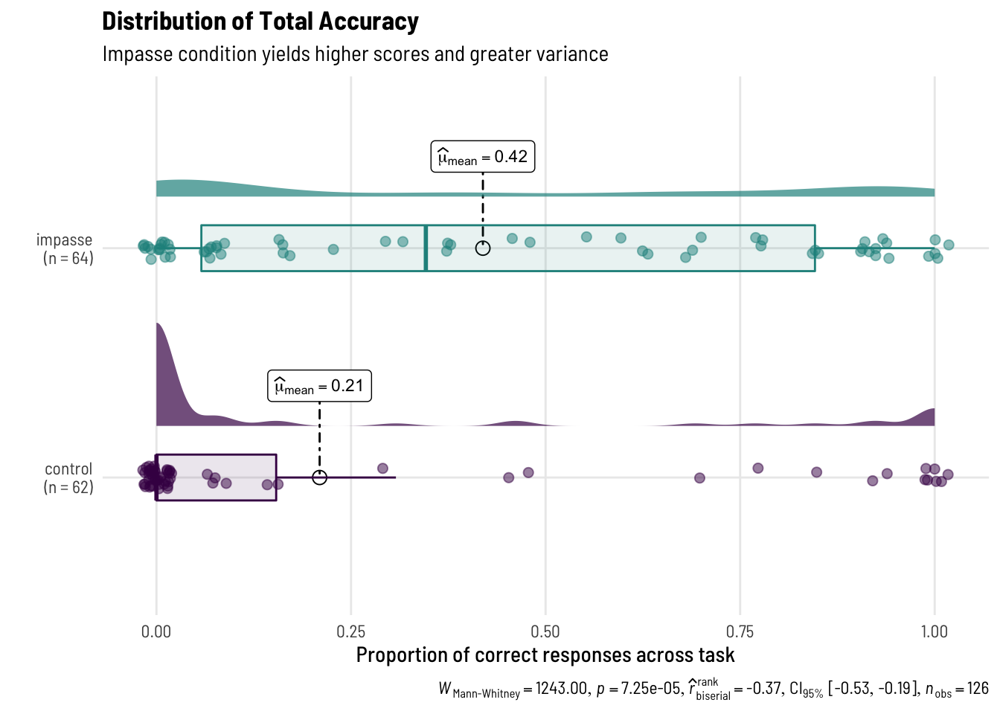
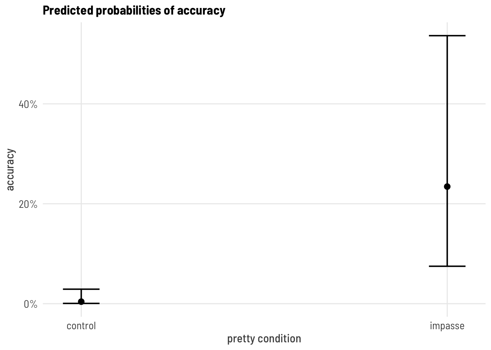

[subject level]: accuracy (number of test phase qs correct from total s_NABS)
predictor: condition [between-subjects factor]
Analysis Strategy
Wilcoxon-Rank Sum (Mann-Whitney) test on subject-level total accuracy of test phase (s_NABS)
Mixed Logistic Regression accuracy ~ condition + (1 | subject ) + (1 | question)
model effect of condition on probability of correct response [during test phase] while accounting for subject (and item-level?) effects
Alternatives
Ordinal Mixed Logistic Regression on scaled_score
OLS Linear Regression: bimodal distribution at tails makes the mean a poor predictor; LMs violate assumptions of normally distributed residuals; both absolute and scaled scores yield non-normal residuals; no transformation of the outcome variables yield normal residuals
Notes
Also exploring:
Hurdle model (mixture model w/ binomial + [poisson or negbinom count; 0s from 1 DGP)
Zero Inflated model (mixture model w/ binomial + poisson or negbinom count; 0s from 2 DGPs)
Beta regression hurdle model? (mixture with location and scale parameters [mean, variance] and hurdles for floor and ceiling effects)
title ="Descriptive Statistics of Response Accuracy (Total % Correct)"tbl1 <- mosaic::favstats(~task_percent, data = df_s) tbl1 %>%kbl (caption = title) %>%kable_classic()
Descriptive Statistics of Response Accuracy (Total % Correct)
min
Q1
median
Q3
max
mean
sd
n
missing
0
0
0.077
0.692
1
0.316
0.392
126
0
CODE
title ="Descriptive Statistics of Response Accuracy (Total % Correct) BY CONDITION"tbl2 <- mosaic::favstats(task_percent ~ pretty_condition, data = df_s) tbl2 %>%kbl (caption = title) %>%kable_classic()
Descriptive Statistics of Response Accuracy (Total % Correct) BY CONDITION
pretty_condition
min
Q1
median
Q3
max
mean
sd
n
missing
control
0
0.000
0.000
0.154
1
0.210
0.370
62
0
impasse
0
0.058
0.346
0.846
1
0.419
0.387
64
0
WILCOXON RANK SUM (Mann-Whitney Test)
Non parametric alternative to t-test; compares median rather than mean by ranking data
Does not assume normality
Does not assume equal variance of samples (homogeneity of variance)
Test
CODE
(w <-wilcox.test(df_s$task_percent ~ df_s$pretty_condition,paired =FALSE, alternative ="less")) #less, greater
Wilcoxon rank sum test with continuity correction
data: df_s$task_percent by df_s$pretty_condition
W = 1243, p-value = 7e-05
alternative hypothesis: true location shift is less than 0
CODE
report(w)
Effect sizes were labelled following Funder's (2019) recommendations.
The Wilcoxon rank sum test with continuity correction testing the difference in ranks between df_s$task_percent and df_s$pretty_condition suggests that the effect is negative, statistically significant, and large (W = 1243.00, p < .001; r (rank biserial) = -0.37, 95% CI [-1.00, -0.22])
Inference
(not reported)
Because the distribution of the outcome variable is not normally distributed, we evaluate the effect of CONDITION on ACCURACY via a non-parametric test. Consistent with our hypothesis, a Wilcoxon rank sum test (with continuity correction) on ACCURACY by CONDITION indicates that data in each condition likely come from different population distributions (W = 1243, p < 0.001; one-tailed), and that the distribution of the control condition is less (i.e. shifted to the left/ lower scores) than the impasse condition (^{r} = -0.37, 95% CI [-1.00, -0.22]), a large-sized effect.
Scale for 'colour' is already present. Adding another scale for 'colour',
which will replace the existing scale.
CODE
p$layers[[3]]=NULL#remove default boxplote <- statsExpressions::two_sample_test(y = task_percent, x = pretty_condition, data = df_s,type ="nonparametric", alternative ="less",var.equal =FALSE)#labels are layer 4p +labs(title ="Distribution of Total Accuracy",y ="Proportion of correct responses across task", x ="",subtitle ="Impasse condition yields higher scores and greater variance",caption=e$expression[[1]])

MIXED LOGISTIC REGRESSION
Fit a mixed logistic regression (at the item level), predicting accuracy (absolute score) on all discriminating questions by condition; accounting for random effects of subject and item.
#confirm all factors is.factor(df_i$q) &&is.factor(df_i$subject) &&is.factor(df_i$pretty_condition) &&is.factor(df_i$accuracy)
[1] TRUE
CODE
## 1 | SETUP RANDOM INTERCEPT SUBJECT#:: EMPTY MODEL (baseline, no random effect)print("Empty fixed model")
[1] "Empty fixed model"
CODE
m0 =glm(accuracy ~1, family ="binomial", data = df_i) # summary(m0)#:: RANDOM INTERCEPT SUBJECTprint("Subject intercept random model")
[1] "Subject intercept random model"
CODE
mm.rS <-glmer(accuracy ~ (1|subject), data = df_i, family ="binomial")# summary(mm.rS)# :: TEST random effectpaste("AIC decreases w/ new model?", m0$aic >AIC(logLik(mm.rS)))
[1] "AIC decreases w/ new model? TRUE"
CODE
test_lrt(m0,mm.rS) #same as anova(m0, m1, test = "Chi")
# Likelihood-Ratio-Test (LRT) for Model Comparison (ML-estimator)
Name | Model | df | df_diff | Chi2 | p
--------------------------------------------------
m0 | glm | 1 | | |
mm.rS | glmerMod | 2 | 1 | 1011.83 | < .001
CODE
paste("Likelihood Ratio test is significant? p = ",(test_lrt(m0,mm.rS))$p[2])
[1] "Likelihood Ratio test is significant? p = 4.82063151679782e-222"
CODE
#:: RANDOM INTERCEPT SUBJECT + ITEMprint("Subject Intercept + Item intercept random model")
[1] "Subject Intercept + Item intercept random model"
CODE
mm.rSQ <-glmer(accuracy ~ (1|subject) + (1|q), data = df_i, family ="binomial")#summary(mm.rSQ)# :: TEST random effectpaste("AIC decreases w/ new model?", AIC(logLik(mm.rS)) >AIC(logLik(mm.rSQ)))
[1] "AIC decreases w/ new model? TRUE"
CODE
test_lrt(mm.rS, mm.rSQ) #same as anova(m0, m1, test = "Chi")
Some of the nested models seem to be identical and probably only vary in
their random effects.
# Likelihood-Ratio-Test (LRT) for Model Comparison (ML-estimator)
Name | Model | df | df_diff | Chi2 | p
-------------------------------------------------
mm.rS | glmerMod | 2 | | |
mm.rSQ | glmerMod | 3 | 1 | 15.82 | < .001
CODE
paste("Likelihood Ratio test is significant? p = ",(test_lrt(mm.rS, mm.rSQ))$p[2])
Some of the nested models seem to be identical and probably only vary in
their random effects.
[1] "Likelihood Ratio test is significant? p = 0.0000697594950188617"
[1] "FIXED Condition + Subject & Item random intercepts"
CODE
mm.CrSQ <-glmer(accuracy ~ pretty_condition + (1|subject) + (1|q) ,data = df_i, family ="binomial")#summary(mm.CrSQ)paste("AIC decreases w/ new model", AIC(logLik(mm.rSQ)) >AIC(logLik(mm.CrSQ)) )
[1] "AIC decreases w/ new model TRUE"
CODE
test_lrt(mm.rSQ,mm.CrSQ) #same as anova(m0, m1, test = "Chi")
# Likelihood-Ratio-Test (LRT) for Model Comparison (ML-estimator)
Name | Model | df | df_diff | Chi2 | p
--------------------------------------------------
mm.rSQ | glmerMod | 3 | | |
mm.CrSQ | glmerMod | 4 | 1 | 18.66 | < .001
CODE
paste("Likelihood Ratio test is significant? p = ",(test_lrt(mm.rSQ,mm.CrSQ))$p[2])
[1] "Likelihood Ratio test is significant? p = 0.0000156066263742927"
CODE
# control = glmerControl(optimizer="bobyqa", optCtrl=list(maxfun=2e5)))
A likelihood ratio test indicates adding CONDITION as a fixed effect to a logistic regression model including a fixed effect random intercepts for SUBJECT and QUESTION explains more variance in the data than random-effects only model.
Describe
CODE
# best modelm <- mm.CrSQ#::::::::: PRINT MODEL print("PREDICTOR MODEL")
[1] "PREDICTOR MODEL"
CODE
summary(m)
Generalized linear mixed model fit by maximum likelihood (Laplace
Approximation) [glmerMod]
Family: binomial ( logit )
Formula: accuracy ~ pretty_condition + (1 | subject) + (1 | q)
Data: df_i
AIC BIC logLik deviance df.resid
1006 1028 -499 998 1634
Scaled residuals:
Min 1Q Median 3Q Max
-3.316 -0.136 -0.052 0.168 5.522
Random effects:
Groups Name Variance Std.Dev.
subject (Intercept) 22.216 4.713
q (Intercept) 0.308 0.555
Number of obs: 1638, groups: subject, 126; q, 13
Fixed effects:
Estimate Std. Error z value Pr(>|z|)
(Intercept) -5.51 1.02 -5.40 6.5e-08 ***
pretty_conditionimpasse 4.32 1.12 3.87 0.00011 ***
---
Signif. codes: 0 '***' 0.001 '**' 0.01 '*' 0.05 '.' 0.1 ' ' 1
Correlation of Fixed Effects:
(Intr)
prtty_cndtn -0.802
#:::::::: MANUAL ONE-SIDED SIGTEST #note: anova and chi square are always one-tailed, but that is independent of being one-sided#https://www.ibm.com/support/pages/can-one-get-one-tailed-tests-logistic-regression-dividing-significance-levels-half# one-sided (right tail) z test for B COEFFICIENT#SANITY CHECK 2-tailed test should match the model output# tt <- 2*pnorm(summary(m)$coefficients[2,3], lower.tail = F)# paste("p value for two-tailed test, null B = 0 : ",round(tt,5))# ot <- pnorm(summary(m)$coefficients[2,3], lower.tail = F)# paste("BUT we want a one directional, null: B <= 0: ",round(ot,5))#:::::::: INTERPRET COEFFICIENTS# se <- sqrt(diag(stats::vcov(m)))# # table of estimates with 95% CIpaste("LOG ODDS")
# A tibble: 4 × 9
effect group term estimate std.error statistic p.value conf.low conf.high
<chr> <chr> <chr> <dbl> <dbl> <dbl> <dbl> <dbl> <dbl>
1 fixed <NA> (Int… -5.51 1.02 -5.40 6.49e-8 -7.51 -3.51
2 fixed <NA> pret… 4.32 1.12 3.87 1.08e-4 2.14 6.51
3 ran_pars subje… sd__… 4.71 NA NA NA NA NA
4 ran_pars q sd__… 0.555 NA NA NA NA NA
# A tibble: 4 × 9
effect group term estimate std.error statistic p.value conf.low conf.high
<chr> <chr> <chr> <dbl> <dbl> <dbl> <dbl> <dbl> <dbl>
1 fixed <NA> (Int… 0.00406 0.00413 -5.40 6.49e-8 5.50e-4 0.0299
2 fixed <NA> pret… 75.5 84.3 3.87 1.08e-4 8.46e+0 674.
3 ran_pars subje… sd__… 4.71 NA NA NA NA NA
4 ran_pars q sd__… 0.555 NA NA NA NA NA
To quantify the effect of CONDITION on ACCURACY, we fit a mixed-effect binomial logistic regression model with random intercepts for subjects and questions. The structure of this model allows us to differentiate between random variance introduced by individual subjects and questions, versus the expected systematic variance of CONDITION. A likelihood ratio test indicates that a model including a fixed effect of CONDITION is explains significantly more variance in the data than an intercepts-only baseline model (\(\chi^2 (3) = 18.66, p < 0.001\)). The explanatory power of the entire model is substantial (\(conditional \ R^2 = 0.89\)) and the part related to the fixed effect CONDITION (\(marginal \ R^2\)) explains 15% of variance. Consistent with our hypothesis, the impasse condition substantially increased the odds of a correct response. Across the entire task participants in the impasse condition were 75 times as likely to offer a correct response, compared with those in the control condition ( \(e^{\beta_1} = 75.51, p < 0.001\) , one-tailed \(90 \% \ CI [8.46, 673.79]\)).
## | PLOT PREDICTIONS#SJPLOT | MODEL | PROBABILITIESplot_model(m, type="eff",show.intercept =TRUE,show.values =TRUE,title ="Model Prediction | Probability of Accurate Response",axis.title =c("Condition","Probability of Accurate Response"))
$pretty_condition
CODE
#PLOT MODEL PREDICTIONplot_model(m, type ="pred")
$pretty_condition

CODE
# ylim(0,1) + # labs(# title = "Model Prediction | Probability of Accurate Response",# subtitle = "Impasse increases Probability of Correct Response"# )#TODO EMMEANS for the estimated marginal means
Do Ss in the IMPASSE condition offer less-orthogonal interpretations across the test phase questions?
While absolute accuracy score tells us whether a participant successfully interpreted the coordinate system, it doesn’t allow us to differentiate between different kinds of incorrect interpretations. Here we examine the (categorical) interpretation state type based on the nature of subject’s response, and determine if these interpretations differ by experimental condition. State is a 3-category variable that groups the following interpretations:
“orthogonal” [reference category] includes orthogonal and satisficing responses ==> indicates a primarily orthogonal state of coordinate system understanding
“other” includes: blank, reference point, responses that can’t be classified (including selecting all datapoints), => indicates an uncertain or unidentifiable state of coordinate system understanding, but one that is distinctly not orthogonal nor triangular
“angular” includes ‘lines connecting’ responses as well as responses that include both orthogonal and triangular answers => indicates some degree of angular/triangular coordinate understanding
“triangular” includes correct triangular and ‘lines connecting’ responses as well as responses that include both orthogonal and triangular answers => indicates some degree of angular/triangular coordinate understanding
Research Question
Does Ss in the impasse condition produce less orthogonal responses across questions?
Hypothesis
H1A | Ss in the IMPASSE condition will have a higher likelihood of producing unknown and triangle-like response states across all items
Data
data: df_items where q nin 6,9 (13 discriminant test phase items)
outcome: state ( 3 level factor from high_interpretation )
predictor: condition [between-subjects factor]
Analysis Strategy
MIXED Multinomial (Logistic) Regression on state predicted by condition
Alternative:
MIXED Ordinal regression on state (doesn’t meet proportional odds assumption-I think)
MIXED Multinomial or Ordinal regression on high_interpretation (some cells are 0, produces problems)
A proportional bar chart visualizing the proportion of each interpretations type by condition for each data collection modality (left/right facet) reveals that the pattern of responses are similar regardless of the data collection modality, by differ by condition. In the impasse condition, there are more triangular responses than in control. In the impasse condition, there are also more positive transition (i.e. triangle-like) and neutral (ie. blank or uncertain response types) than in the control condition.
CODE
#::::::::::::DESCRIPTIVEStable(df_i$state, df_i$pretty_condition) %>%addmargins(2) %>%#display sum for rowprop.table(margin=2) %>%#return proportion (of column)addmargins(1) #sanity check sum of columns
control impasse Sum
orthogonal 0.69727 0.32692 0.50916
other 0.07320 0.19231 0.13370
tri-like 0.00993 0.03846 0.02442
triangular 0.21960 0.44231 0.33272
Sum 1.00000 1.00000 1.00000
CODE
(t <-table(df_i$state, df_i$pretty_condition) %>%addmargins(2) %>%#display sum for rowaddmargins(1)) #sanity check sum of columns
control impasse Sum
orthogonal 562 272 834
other 59 160 219
tri-like 8 32 40
triangular 177 368 545
Sum 806 832 1638
MIXED MULTINOMIAL REGRESSION
Does condition affect the response state of of items across the task?
Fit a MIXED logistic regression predicting interpretation state (k=3) by condition(k = 2).
Can use mclogit mblogit() with random effect or bayesian brms package b/c nlme, lme4 don’t support random effects on multinomial (ie no categorical family on glmer())
Alternative would be to manually run [k-1] X binomial mixed models [should compare outcomes]
[k-1] equations will be estimated (# categories - 1); each representing the odds of answering in that particular interpretation (vs) the reference category (orthogonal answer) [essentially a series of binary logistic regressions, but instead of incorrect/correct, comparing [reference category] vs [this category])
For each equation:
\(\beta_{0}\)= Log Odds of [this category type vs. reference category type) response in CONTROL condition
\(e^{\beta_{0}}\)= ODDS of [this category type vs. reference category type] response in CONTROL condition
\(\beta_{1}\)=\(\beta_{1impasse}\)Log Odds (Log OR; change in odds for [this category] type response in impasse (vs) control [log scale])
\(e^{\beta_{1}}\)= ODDS RATIO of [this. vs reference category type] response in IMPASSE (vs) CONTROL
Two-tailed NHST Null hypothesis:\(\beta_{impasse} = 0\)the odds for [this category of response vs. reference] are not different for IMPASSE condition
Alternative hypothesis:\(\beta_{impasse} \ne 0\)the odds of [this category of response vs. reference] increases or decreases for IMPASSE condition
Fit Model [mblogit]
CODE
#https://www.elff.eu/software/mclogit/manual/mblogit/#"baseline category logit" model matches multinom()#check reference level print("Categories (first is reference)")
[1] "Categories (first is reference)"
CODE
levels(df_i$state)
[1] "orthogonal" "other" "tri-like" "triangular"
CODE
#FIT EMPTY MODEL# print("EMPTY MODEL")m.mbl0 <-mblogit(state ~ pretty_condition , #no random intercepts; fixed only model data = df_i)
# Indices of model performance
AIC | BIC | RMSE | Sigma
-------------------------------------
21103.626 | 21200.848 | 0.242 | 1.077
CODE
#TABLEtab_model(m.mbl1, transform ="exp", title ="Model Predicted Odds Ratio")
Model Predicted Odds Ratio
state
Predictors
Estimates
CI
p
other~(Intercept)
0.08
0.03 – 0.21
<0.001
tri-like~(Intercept)
0.01
0.00 – 0.04
<0.001
triangular~(Intercept)
0.05
0.01 – 0.25
<0.001
other~pretty conditionimpasse
12.04
5.66 – 25.59
<0.001
tri-like~pretty conditionimpasse
19.86
5.96 – 66.17
<0.001
triangular~pretty conditionimpasse
31.63
6.65 – 150.37
<0.001
N subject
126
N q
13
Observations
1638
Inference
Being in the IMPASSE condition increases the odds of giving an unknown (potentially nonsense) or blank/uncertain response rather than an orthogonal (or satisficing) response by a factor of 12 (z = 6.48, p < 0.001) . Participants in the impasse condition were 12x as likely to give an unknown/uncertain response rather than an orthogonal response compared to participants in control.
Being in the IMPASSE condition increases the odds of giving ‘triangle-like’ response rather than an orthogonal (or satisficing) response by a factor of 29 (z = 4.63, p < 0.001 ). Participants in the impasse condition were more than 29x as likely to give an a triangular response rather than an orthogonal response compared to participants in control.
As with the (binary) logistic regression on accuracy ~ condition, significant model intercepts indicate that the odds of being in any particular response state (vs) orthogonal are significantly different than 1 in the control condition. (i.e. not 1:1 odds or 50% chance of being in that response state. Orthogonal is a much more probable response state in control)
Visualize
CODE
#set model m <- m.mbl1summary(m)
Warning in sqrt(diag(vcov.phi)): NaNs produced
Call:
mblogit(formula = state ~ pretty_condition, data = df_i, random = list(~1 |
subject, ~1 | q))
Equation for other vs orthogonal:
Estimate Std. Error z value Pr(>|z|)
(Intercept) -2.574 0.527 -4.88 1.1e-06 ***
pretty_conditionimpasse 2.488 0.385 6.47 9.9e-11 ***
Equation for tri-like vs orthogonal:
Estimate Std. Error z value Pr(>|z|)
(Intercept) -4.804 0.800 -6.00 1.9e-09 ***
pretty_conditionimpasse 2.989 0.614 4.87 1.1e-06 ***
Equation for triangular vs orthogonal:
Estimate Std. Error z value Pr(>|z|)
(Intercept) -2.924 0.782 -3.74 0.00018 ***
pretty_conditionimpasse 3.454 0.795 4.34 0.000014 ***
---
Signif. codes: 0 '***' 0.001 '**' 0.01 '*' 0.05 '.' 0.1 ' ' 1
(Co-)Variances:
Grouping level: subject
Estimate Std.Err.
other~1 2.93 NaN
tri-like~1 3.15 5.29 1.25 2.60
triangular~1 5.43 8.25 16.08 3.26 5.21 8.49
Grouping level: q
Estimate Std.Err.
other~1 2.54 12.0
tri-like~1 2.88 4.91 19.0 29.7
triangular~1 2.13 3.54 3.36 15.1 23.6 18.6
Null Deviance: 4540
Residual Deviance: 1890
Number of Fisher Scoring iterations: 25
Number of observations
Groups by subject: 126
Groups by q: 13
Individual observations: 1638
CODE
## | PLOT PARAMETERS #SJPLOT | MODEL | ODDS RATIOplot_model(m, vline.color ="red", show.intercept =TRUE, show.values =TRUE,p.threshold =0.1, #manually adjust to account for directional testci.lvl =0.90 ) +#manually adjusted for directional test labs(title ="Model Estimate | Odds Ratio",subtitle ="",x ="Condition")
Warning: Could not estimate a good default ROPE range. Using 'c(-0.1, 0.1)'.
CODE
plot(result)
CODE
## | PLOT PREDICTIONS#SJPLOT | MODEL | PROBABILITIES# plot_model(m, type="eff",# show.intercept = TRUE,# show.values = TRUE,# title = "Model Prediction | Probability of Accurate Response",# axis.title = c("Condition","Probability of Accurate Response"))# # #PLOT MODEL PREDICTION# plot_model(m, type = "pred")[[1]] + # ylim(0,1) + labs(# title = "Model Prediction | Probability of Accurate Response",# subtitle = "Impasse increases Probability of Correct Response"# )#TODO EMMEANS for the estimated marginal means
Fit Model [brms]
CODE
#BAYESIAN MIXED VERSIONmm.cat.CrSQ <-brm( state ~ pretty_condition + (1|subject) + (1|q), data = df_i, family ="categorical",chains =4, iter =2000, warmup =1000,cores =4, seed =1234,backend ="cmdstanr",file ="analysis/SGC3A/models/sgc3a_brms_mixedcat_state_LAB.rds")
CODE
#set model m <- mm.cat.CrSQsummary(m)
Family: categorical
Links: muother = logit; mutrilike = logit; mutriangular = logit
Formula: state ~ pretty_condition + (1 | subject) + (1 | q)
Data: df_i (Number of observations: 1638)
Draws: 4 chains, each with iter = 2000; warmup = 1000; thin = 1;
total post-warmup draws = 4000
Group-Level Effects:
~q (Number of levels: 13)
Estimate Est.Error l-95% CI u-95% CI Rhat Bulk_ESS
sd(muother_Intercept) 1.46 0.37 0.90 2.34 1.00 1235
sd(mutrilike_Intercept) 2.33 0.80 1.19 4.30 1.00 1435
sd(mutriangular_Intercept) 1.01 0.28 0.59 1.68 1.00 958
Tail_ESS
sd(muother_Intercept) 2115
sd(mutrilike_Intercept) 2236
sd(mutriangular_Intercept) 1649
~subject (Number of levels: 126)
Estimate Est.Error l-95% CI u-95% CI Rhat Bulk_ESS
sd(muother_Intercept) 1.35 0.19 1.00 1.74 1.00 1109
sd(mutrilike_Intercept) 2.03 0.46 1.21 3.02 1.00 1036
sd(mutriangular_Intercept) 4.62 0.51 3.72 5.73 1.01 820
Tail_ESS
sd(muother_Intercept) 2005
sd(mutrilike_Intercept) 1924
sd(mutriangular_Intercept) 1426
Population-Level Effects:
Estimate Est.Error l-95% CI u-95% CI Rhat
muother_Intercept -3.12 0.51 -4.11 -2.07 1.00
mutrilike_Intercept -6.84 1.14 -9.34 -4.83 1.00
mutriangular_Intercept -4.00 0.81 -5.65 -2.46 1.01
muother_pretty_conditionimpasse 2.55 0.36 1.87 3.28 1.00
mutrilike_pretty_conditionimpasse 3.19 0.74 1.83 4.81 1.00
mutriangular_pretty_conditionimpasse 4.26 1.03 2.33 6.42 1.01
Bulk_ESS Tail_ESS
muother_Intercept 683 1094
mutrilike_Intercept 974 1451
mutriangular_Intercept 654 1171
muother_pretty_conditionimpasse 1496 2245
mutrilike_pretty_conditionimpasse 1679 2373
mutriangular_pretty_conditionimpasse 405 768
Draws were sampled using sample(hmc). For each parameter, Bulk_ESS
and Tail_ESS are effective sample size measures, and Rhat is the potential
scale reduction factor on split chains (at convergence, Rhat = 1).
CODE
## | PLOT PARAMETERS #SJPLOT | MODEL | ODDS RATIO# plot_model(m, vline.color = "red", # show.intercept = TRUE, # show.values = TRUE,# p.threshold = 0.1, #manually adjust to account for directional test# ci.lvl = 0.90 ) + #manually adjusted for directional test # labs(title = "Model Estimate | Odds Ratio",# subtitle = "",# x = "Condition")#EASYSTATS | MODEL | ODDS RATIOresult <-model_parameters(m, exponentiate =TRUE, component ="all")
Possible multicollinearity between b_mutriangular_pretty_conditionimpasse and b_mutriangular_Intercept (r = 0.72). This might lead to inappropriate results. See 'Details' in '?rope'.
CODE
plot(result)
CODE
# result <- simulate_parameters(m)# plot(result, stack = FALSE)#check posteriorpp_check(m, ndraws=1000)
Possible multicollinearity between b_mutriangular_pretty_conditionimpasse and b_mutriangular_Intercept (r = 0.72). This might lead to inappropriate results. See 'Details' in '?equivalence_test'.
Possible multicollinearity between b_mutriangular_pretty_conditionimpasse and b_mutriangular_Intercept (r = 0.72). This might lead to inappropriate results. See 'Details' in '?rope'.
CODE
plot(result)
CODE
result <-pd(m)plot(result)
CODE
## | PLOT PREDICTIONS#SJPLOT | MODEL | PROBABILITIES# plot_model(m, type="eff",# show.intercept = TRUE,# show.values = TRUE,# title = "Model Prediction | Probability of Accurate Response",# axis.title = c("Condition","Probability of Accurate Response"))# # #PLOT MODEL PREDICTIONplot_model(m, type ="pred")
Note: uncertainty of error terms are not taken into account. You may want to use `rstantools::posterior_predict()`.
$pretty_condition
CODE
#TODO EMMEANS for the estimated marginal means#TODO OUTPUT TABLE #https://arelbundock.com/posts/modelsummary_multinomial_logit/# modelsummary(m)
Inference
TODO
COMPARE
CODE
compare_models(m.mbl1, mm.cat.CrSQ)
Possible multicollinearity between b_mutriangular_pretty_conditionimpasse and b_mutriangular_Intercept (r = 0.72). This might lead to inappropriate results. See 'Details' in '?rope'.
The predictions of the manual, frequentist mixed multinomial and bayesian mixed multinomial models are comparable.
H1B | Q1 ACCURACY
Do Ss in the IMPASSE condition have a higher likelihood of producing a correct response to the first question?
The graph comprehension task includes 15 questions completed in sequence. But the first question the reader encounters (Q1) is the most important, as it is their first exposure to the unconventional triangular coordinate system.
Research Question
Does the frequency of correct (vs) incorrect responses on the first question differ by condition? [Is response accuracy independent of condition?]
Hypothesis
H1A | Ss in the IMPASSE condition will have a higher likelihood of correctly responding to the first question than those in the CONTROL condition
Data
data: df_items where q == 1
outcome: accuracy ( factor(incorrect/correct) from score_niceABS [absolute score]
predictor: condition [between-subjects factor]
Analysis Strategy
Logistic Regression on accuracy predicted by condition
account for difference in odds of correct score by condition
Alternatives:
Chi-Square test of independence on outcome accuracy by condition
Notes
CHIQ SQR is simplest method to examine independence of two categorical factors; LOGISTIC REGRESSION is recommended for binomial ~ continuous; though with regression we can quantify the size of the effect and overall model fit
independence assumption : (CHI SQR) as we only consider responses on the first question, each observation corresponds to an individual subject, and are thus independent
cell frequency : (CHI SQR) expected frequency in each cell of the contingency table is greater than 5 (more than 5 correct , more than 5 incorrect responses)
A proportional bar chart visualizing the proportion of incorrect (vs) correct responses in each condition for each data collection modality (left/right facet) reveals that the pattern of responses appear the same regardless of the data collection modality. In both data collection sessions, the proportion of incorrect responses is much greater than the proportion of correct responses, regardless of condition (marginal probability of incorrect). In the impasse condition, the difference in proportions is smaller than the control condition (conditional probability of success in impasse; (i.e) There are more correct responses in the impasse condition than the control condition).
CODE
#::::::::::::DESCRIPTIVESpaste("Proportions of Correct Responses by Condition")
[1] "Proportions of Correct Responses by Condition"
CODE
table(df$accuracy, df$pretty_condition) %>%addmargins(2) %>%#display sum for rowprop.table(margin=2) %>%#return proportion (of column)addmargins(1) #sanity check sum of columns
control impasse Sum
incorrect 0.839 0.703 0.770
correct 0.161 0.297 0.230
Sum 1.000 1.000 1.000
CODE
paste("Number of Correct Responses by Condition")
[1] "Number of Correct Responses by Condition"
CODE
table(df$accuracy, df$pretty_condition) %>%addmargins(2) %>%#display sum for rowaddmargins(1) #sanity check sum of columns
control impasse Sum
incorrect 52 45 97
correct 10 19 29
Sum 62 64 126
LOGISTIC REGRESSION
Fit a logistic regression predicting accuracy (absolute score) (n = 126) by condition (k = 2).
Parameter estimate: \(\beta_{0}\) = Log Odds of (correct) responses in CONTROL condition
\(e^{\beta_{0}}\) = ODDS of correct response in CONTROL condition
Parameter estimate: \(\beta_{1}\) = \(\beta_{1impasse}\) Log Odds (Log OR; change in odds for correct response in impasse (vs) control [log scale])
\(e^{\beta_{1}}\) = ODDS RATIO of correct response in IMPASSE (vs) CONTROL
Null hypothesis:\(\beta_{impasse} \le 0\) the odds for a correct response does not change, or decreases
Alternative hypothesis:\(\beta_{impasse} \gt 0\) the odds of a correct response increases
Fit Model
First, we fit a logistic regression with condition as predictor, and compare its fit to an empty (intercept-only) model.
CODE
# MODEL FITTING ::::::::#: 1 EMPTY MODEL baseline glm model intercept onlym0 =glm(accuracy ~1, data = df, family ="binomial")# print("EMPTY MODEL")# summary(m0)#: 2 CONDITION modelm1 <-glm( accuracy ~ pretty_condition, data = df, family ="binomial")# print("PREDICTOR MODEL")summary(m1)
Call:
glm(formula = accuracy ~ pretty_condition, family = "binomial",
data = df)
Deviance Residuals:
Min 1Q Median 3Q Max
-0.839 -0.839 -0.593 -0.593 1.910
Coefficients:
Estimate Std. Error z value Pr(>|z|)
(Intercept) -1.649 0.345 -4.77 1.8e-06 ***
pretty_conditionimpasse 0.786 0.441 1.79 0.074 .
---
Signif. codes: 0 '***' 0.001 '**' 0.01 '*' 0.05 '.' 0.1 ' ' 1
(Dispersion parameter for binomial family taken to be 1)
Null deviance: 135.95 on 125 degrees of freedom
Residual deviance: 132.63 on 124 degrees of freedom
AIC: 136.6
Number of Fisher Scoring iterations: 4
#: 3 TEST SUPERIOR FITpaste("AIC wth predictor is lower than empty model?", m0$aic > m1$aic)
[1] "AIC wth predictor is lower than empty model? TRUE"
CODE
test_lrt(m0,m1) #same as anova(m0, m1, test = "Chi")
# Likelihood-Ratio-Test (LRT) for Model Comparison (ML-estimator)
Name | Model | df | df_diff | Chi2 | p
------------------------------------------
m0 | glm | 1 | | |
m1 | glm | 2 | 1 | 3.31 | 0.069
CODE
paste("Likelihood Ratio test is significant? p = ",(test_lrt(m0,m1))$p[2])
[1] "Likelihood Ratio test is significant? p = 0.0687084837283363"
The Condition predictor decreases AIC, but the Likelihood Ratio Test is marginal. We proceed to examine the predictor model, as we plan to do a 1-tailed NHST .
Describe
CODE
# DESCRIBE MODEL ::::::::::::::::::::::::::::::::::::: print("PREDICTOR MODEL [default two-tailed sig test]")
[1] "PREDICTOR MODEL [default two-tailed sig test]"
CODE
summary(m1)
Call:
glm(formula = accuracy ~ pretty_condition, family = "binomial",
data = df)
Deviance Residuals:
Min 1Q Median 3Q Max
-0.839 -0.839 -0.593 -0.593 1.910
Coefficients:
Estimate Std. Error z value Pr(>|z|)
(Intercept) -1.649 0.345 -4.77 1.8e-06 ***
pretty_conditionimpasse 0.786 0.441 1.79 0.074 .
---
Signif. codes: 0 '***' 0.001 '**' 0.01 '*' 0.05 '.' 0.1 ' ' 1
(Dispersion parameter for binomial family taken to be 1)
Null deviance: 135.95 on 125 degrees of freedom
Residual deviance: 132.63 on 124 degrees of freedom
AIC: 136.6
Number of Fisher Scoring iterations: 4
# MANUAL ONE-SIDED SIGTEST ::::::::::::::::::::::::::: # one-sided (right tail) z test for B COEFFICIENT#https://stats.stackexchange.com/questions/330655/strategy-for-a-one-sided-test-of-glms-coefficients#SANITY CHECK 2-tailed test should match the model outputtt <-2*pnorm(summary(m1)$coefficients[2,3], lower.tail = F)paste("p value for two-tailed test, null B = 0 : ",round(tt,3))
[1] "p value for two-tailed test, null B = 0 : 0.074"
CODE
ot <-pnorm(summary(m1)$coefficients[2,3], lower.tail = F)paste("BUT we want a one tailed directional, null: B <= 0: ",round(ot,3))
[1] "BUT we want a one tailed directional, null: B <= 0: 0.037"
CODE
paste("adjusted confint for directional hypothesis")
[1] "adjusted confint for directional hypothesis"
CODE
(dcint <-confint(m1, level =0.90)) # get 90% for right side))
# Retrieve predictions as probabilities # (for each level of the predictor)pred.control <-predict(m1,data.frame(pretty_condition="control"),type="response")#this should match : plogis(intercept coefficient)paste("Probability of success in control,", pred.control)
[1] "Probability of success in control, 0.161290322580645"
CODE
pred.impasse <-predict(m1,data.frame(pretty_condition="impasse"),type="response")#this should match : plogis(intercept coefficient + predictor coeff)paste("Probability of success in impasse,", pred.impasse)
[1] "Probability of success in impasse, 0.296875000000275"
Inference
In Dissertation
We fit a logistic regression model to explore the effect of experimental condition on probability of a correct answer on the first question. In this model, the effect of condition is statistically significant (z = 1.79, p = 0.04, one-tailed). The model predicts that the odds of a correct response on the first question in the impasse condition increase by nearly 120% (\(e^{beta_{impasse}}\) = 2.19, 95% CI [1.08, 4.63]) over the control condition. The intercept\(\beta_{0}\)parameter is also significant, (\(e^{b_{0}}\) = 0.19, p < 0.001, 95% CI [0.11, 0.33]) indicating that the odds of a correct response in the control condition are significantly less than even (less than 50/50 chance of correct response in control condition).
Equivalent statements:
being in impasse condition increases log odds of correct response by 0.79 (over control)
being in impasse increases odds of correct response in impasse over control increases by factor of 2.19
probability of correct response in impasse predicted as 30%, vs only 16% in control condition
Visualize
CODE
#SET MODELm <- m1#GGSTATS | MODEL | LOG ODDS # ggcoefstats(m1, output = "plot", # conf.level = 0.90) + # labs(x = "Log Odds Estimate", # title = "LOGODDS | Q1 Accuracy ~ condition",# subtitle = "(p is for two tailed test)")#PARAMETERS | MODEL | SIMULATED PARAMETERS# similar to bayesian dist of estimate# result <- simulate_parameters(m1)# #rename params so intercept is plotted # result$Parameter[1] <- "condition [control]"# result$Parameter[2] <- "condition [impasse]"# plot(result) #EQUIVALENCE TEST [not sure if appropriate for log model?]# https://journals.sagepub.com/doi/10.1177/2515245918770963#:~:text=Consequently%2C%20when%20reporting%20an%20equivalence,values%20is%20smaller%20than%20alpha.# https://easystats.github.io/parameters/reference/equivalence_test.lm.html# (result <- equivalence_test(m1, rule = "classic", component = c("all")))# plot(result, show_intercept = TRUE) + # scale_y_discrete(labels = c("impasse", "control")) + # labs( title = "Equivalence Test for Model Parameter Estimates")#PARAMETERS | MODEL | ODDS RATIO # result <- model_parameters(m1,exponentiate = TRUE)# #rename params # result$Parameter[1] <- "condition [control]"# result$Parameter[2] <- "condition [impasse]"# plot(result, show_intercept = TRUE) + labs(# title = "Model Parameter Estimates"# ) + theme_clean() + theme(legend.position="blank")#SJPLOT | MODEL | ODDS RATIO#library(sjPlot)plot_model(m, type ="est",vline.color ="red", show.intercept =TRUE, show.values =TRUE,p.threshold =0.1, #manually adjust to account for directional testci.lvl =0.90 ) +#manually adjusted for directional test scale_y_continuous() +#remove to put on log scale x axis scale_x_discrete(labels=c("control","impasse"))+labs(title ="MODEL ESTIMATE | Q1 Accuracy ~ condition",subtitle ="Impasse increases odds of correct response on Q1",x ="Condition") +theme_clean()
CODE
#SJPLOT | MODEL | PROBABILITIESplot_model(m, type="pred")[[1]] +ylim(0,1) +#scale y axis to actual rangelabs(title ="MODEL PREDICTION | Q1 Accuracy ~ condition",subtitle ="Impasse increases probability of correct response on Q1",x ="Condition") +theme_clean()
Do Ss in the IMPASSE condition offer less-orthogonal interpretations on first question?
While absolute accuracy score tells us whether a participant successfully interpreted the coordinate system, it doesn’t allow us to differentiate between different kinds of incorrect interpretations. Here we examine the (categorical) interpretation state type based on the nature of subject’s response, and determine if these interpretations differ by experimental condition. State is a 3-category derived response variable that groups the following interpretations:
“orthogonal” [reference category] includes orthogonal and satisficing responses ==> indicates a primarily orthogonal state of coordinate system understanding
“other” includes: blank, reference point, responses that can’t be classified (including selecting all datapoints), => indicates an uncertain or unidentifiable state of coordinate system understanding, but one that is distinctly not orthogonal nor triangular
“angular” includes ‘lines connecting’ responses as well as responses that include both orthogonal and triangular answers => indicates some degree of angular/triangular coordinate understanding
“triangular” includes correct triangular and ‘lines connecting’ responses as well as responses that include both orthogonal and triangular answers => indicates some degree of angular/triangular coordinate understanding
Research Question
Does Ss in the impasse condition produce less orthogonal responses on the first question?
Hypothesis
H1A | Ss in the IMPASSE condition will have a higher likelihood of producing unknown and and triangle-like response states, relative to orthogonal response states, on the first question
Data
data: df_items where q == 1
outcome: state ( 4 level factor from 5 level high_interpretation )
predictor: condition [between-subjects factor]
Analysis Strategy
Multinomial (Logistic) Regression on state predicted by condition
Alternative:
Ordinal regression on state; but model doesn’t satisfy proportional odds assumption (parallel slopes)
Multinomial or Ordinal regression on high_interpretation (5 category interpretation state which distinguishes between uncertain (blank, reference) unclassifiable, triangle-like and true triangular.) There are some cells with zeros, however (no uncertain responses in control) which means the model can’t accurately estimate those comparisons
A proportional bar chart visualizing the proportion of each interpretations type by condition for each data collection modality (left/right facet) reveals that the pattern of responses are similar regardless of the data collection modality, by differ by condition. In the impasse condition, there are more triangular responses than in control. We see that around half of the ‘incorrect’ (i.e. not triangular) responses in the impasse condition are not orthogonal-like, but “other/unknown”.
CODE
#::::::::::::DESCRIPTIVEStable(df$state, df$pretty_condition) %>%addmargins(2) %>%#display sum for rowprop.table(margin=2) %>%#return proportion (of column)addmargins(1) #sanity check sum of columns
control impasse Sum
orthogonal 0.8065 0.3125 0.5556
other 0.0161 0.2812 0.1508
tri-like 0.0161 0.1094 0.0635
triangular 0.1613 0.2969 0.2302
Sum 1.0000 1.0000 1.0000
CODE
(t <-table(df$state, df$pretty_condition) %>%addmargins(2) %>%#display sum for rowaddmargins(1)) #sanity check sum of columns
control impasse Sum
orthogonal 50 20 70
other 1 18 19
tri-like 1 7 8
triangular 10 19 29
Sum 62 64 126
MULTINOMIAL REGRESSION
Does condition affect the response state of Q1?
Fit a logistic regression predicting interpretation state (k=3) by condition(k = 2).
3 equations will be estimated (# categories - 1); each representing the odds of answering in that particular interpretation (vs) the reference category (orthogonal answer) [essentially a series of binary logistic regressions, but instead of incorrect/correct, comparing [reference category] vs [this category])
For each equation:
\(\beta_{0}\)= Log Odds of [this category type vs. reference category type) response in CONTROL condition
\(e^{\beta_{0}}\)= ODDS of [this category type vs. reference category type] response in CONTROL condition
\(\beta_{1}\)=\(\beta_{1impasse}\)Log Odds (Log OR; change in odds for [this category] type response in impasse (vs) control [log scale])
\(e^{\beta_{1}}\)= ODDS RATIO of [this. vs reference category type] response in IMPASSE (vs) CONTROL
Two-tailed NHST Null hypothesis:\(\beta_{impasse} = 0\)the odds for [this category of response vs. reference] are not different for IMPASSE condition
Alternative hypothesis:\(\beta_{impasse} \ne 0\)the odds of [this category of response vs. reference] increases or decreases for IMPASSE condition
Fit Model
CODE
#check reference level print("Categories (first is reference)")
[1] "Categories (first is reference)"
CODE
levels(df$state)
[1] "orthogonal" "other" "tri-like" "triangular"
CODE
#FIT EMPTY MODEL# print("EMPTY MODEL")catm.0<-multinom(state ~1, data = df)
# weights: 8 (3 variable)
initial value 174.673090
iter 10 value 141.745541
final value 141.745401
converged
CODE
# summary(catm.0)#FIT PREDICTOR MODEL# print("PREDICTOR MODEL")catm <-multinom(formula = state ~ pretty_condition, data = df, model =TRUE)
# weights: 12 (6 variable)
initial value 174.673090
iter 10 value 121.936407
final value 121.916800
converged
CODE
# summary(catm)#COMPARE MODEL FITpaste("AIC wth predictor is lower than empty model?", catm.0$AIC > catm$AIC)
[1] "AIC wth predictor is lower than empty model? TRUE"
CODE
test_lrt(catm.0, catm)
# Likelihood-Ratio-Test (LRT) for Model Comparison (ML-estimator)
Name | Model | df | df_diff | Chi2 | p
-------------------------------------------------
catm.0 | multinom | 3 | | |
catm | multinom | 6 | 3 | 39.66 | < .001
CODE
##compare bayesian version#library(brms)# b.cat <- brm( state2 ~ pretty_condition, data = df, family = "categorical", backend = "cmdstanr")# summary(b.cat)# plot_model(b.cat)# report(b.cat)# coefficient estimates are very simliar to catm. super cool!##compare mclogit version#"baseline-category logit model# https://www.elff.eu/software/mclogit/manual/mblogit/# blm1 <- mblogit(state2 ~ pretty_condition , data = df)# summary(blm1)#identical to catm. super cool!
AIC in predictor model is less than empty model, and likelihood ratio test indicates predictor model is significantly better fit to the sample data than the empty (intercept only) model.
Call:
multinom(formula = state ~ pretty_condition, data = df, model = TRUE)
Coefficients:
(Intercept) pretty_conditionimpasse
other -3.91 3.81
tri-like -3.91 2.86
triangular -1.61 1.56
Std. Errors:
(Intercept) pretty_conditionimpasse
other 1.009 1.060
tri-like 1.010 1.101
triangular 0.346 0.472
Residual Deviance: 244
AIC: 256
CODE
car::Anova(m)
# weights: 8 (3 variable)
initial value 174.673090
iter 10 value 141.745541
final value 141.745401
converged
Analysis of Deviance Table (Type II tests)
Response: state
LR Chisq Df Pr(>Chisq)
pretty_condition 39.7 3 1.3e-08 ***
---
Signif. codes: 0 '***' 0.001 '**' 0.01 '*' 0.05 '.' 0.1 ' ' 1
CODE
# calculate z-statistics of coefficientsz_stats <-summary(m)$coefficients/summary(m)$standard.errors# convert to p-valuesp_values <- (1-pnorm(abs(z_stats)))*2# display p-values in transposed data frame(p_values <-data.frame(p = (p_values)))
Being in the IMPASSE condition increases the odds of giving an unknown (potentially nonsense) or blank/uncertain response rather than an orthogonal (or satisficing) response by a factor of 45 (z = 3.81, p < 0.001) . Participants in the impasse condition were 45x as likely to give an unknown/uncertain response rather than an orthogonal response compared to participants in control.
Being in the IMPASSE condition increases the odds of giving ‘triangle-like’ response rather than an orthogonal (or satisficing) response by a factor of 17.5 (z = 2.60, p < 0.001 ). Participants in the impasse condition were almost 6x as likely to give an a triangular response rather than an orthogonal response compared to participants in control.
Being in the IMPASSE condition increases the odds of giving ‘triangle-like’ response rather than an orthogonal (or satisficing) response by a factor of 4.8 (z = 3.30, p < 0.001 ). Participants in the impasse condition were almost 6x as likely to give an a triangular response rather than an orthogonal response compared to participants in control.
As with the (binary) logistic regression on accuracy ~ condition, significant model intercepts indicate that the odds of being in any particular response state (vs) orthogonal are significantly different than 1 in the control condition. (i.e. not 1:1 odds or 50% chance of being in that response state. Orthogonal is a much more probable response state in control)
[need to to double check interpretation, but I think that the OR intercepts converted to probabilities equate to the marginal probability of being in each state in the control condition. which makes sense. I think.?]
IF I change reference category for condition… then the intercepts should no longer be significant. The b1 coefficients should still be significant, but with changed sign (much less likely) [Yup! this works!]
Visualize
CODE
#:::::::: PLOT#GGSTATS | MODEL | LOG ODDS # ggcoefstats(m, output = "plot", # # conf.level = 0.90,# exclude.intercept = FALSE) + # labs(x = "Log Odds Estimate", # title = "LOGODDS | Q1 State ~ condition",# subtitle = "(p is for two tailed test)")#:::::::: PLOT#PARAMETERS | MODEL | SIMULATED PARAMETERS# similar to bayesian dist of estimate# result <- simulate_parameters(m)# plot(result, show_intercept = TRUE, stack=FALSE)#PARAMETERS | MODEL | ODDS RATIO # result <- model_parameters(m1,exponentiate = TRUE)# #rename params # result$Parameter[1] <- "condition [control]"# result$Parameter[2] <- "condition [impasse]"# plot(result, show_intercept = TRUE) + labs(# title = "Model Parameter Estimates"# ) + theme_clean() + theme(legend.position="blank")#SJPLOT | MODEL | ODDS RATIO#library(sjPlot)plot_model(m, type ="est",vline.color ="red", show.intercept =TRUE, show.values =TRUE,p.threshold =0.1, #manually adjust to account for directional testci.lvl =0.90 ) +#manually adjusted for directional test # scale_y_continuous() + #remove to put on log scale x axis scale_x_discrete(labels=c("control","impasse"))+labs(title ="MODEL ESTIMATE | Q1 Accuracy ~ condition",subtitle ="Impasse increases odds of correct response on Q1",x ="Condition") +theme_clean()
Scale for 'x' is already present. Adding another scale for 'x', which will
replace the existing scale.
CODE
#SJPLOT | MODEL | PROBABILITIESplot_model(m, type="eff", ci.lvl =0.95)[[1]] +ylim(0,1) +labs(title ="MODEL PREDICTION | Q1 State ~ condition",subtitle ="Impasse increases probability of more accurate response states Q1",x ="Condition") +theme_clean()
Scale for 'y' is already present. Adding another scale for 'y', which will
replace the existing scale.
CODE
#MANUALLY BUILD PREDICTION PLOT FACET BY CONDITION RATHER THAN STATEp <-plot_model(m, type="eff")[[1]]d <-ggplot_build(p)[[1]] points <- d[[2]]points <- points %>%mutate(state =recode(PANEL, "1"="orth", "2"="other", "3"="trilike", "4"="tri"),condition =recode(x, "1"="control","2"="impasse"),prob = y)gf_point( prob ~ state, group =~x, data = points) +geom_errorbar(aes( x = state, ymin = ymin, ymax = ymax)) +facet_grid(~condition) +ylim(0,1)
#EXAMINE PREDICTIONS#create sample data frametest <-data.frame(pretty_condition =c("control", "impasse"))pred <-predict(catm, newdata = test, "probs")paste("Predicted Probability of Being in Each State")
[1] "Predicted Probability of Being in Each State"
CODE
( x <-cbind(test, pred))
pretty_condition orthogonal other tri-like triangular
1 control 0.806 0.0161 0.0161 0.161
2 impasse 0.313 0.2813 0.1094 0.297
CODE
print("MODEL PERFORMANCE")
[1] "MODEL PERFORMANCE"
CODE
performance(catm)
Can't calculate log-loss.
Can't calculate proper scoring rules for ordinal, multinomial or cumulative link models.
# Indices of model performance
AIC | BIC | R2 | R2 (adj.) | RMSE | Sigma
-----------------------------------------------------
255.834 | 272.851 | 0.140 | 0.133 | 0.363 | 1.425
CODE
DescTools::PseudoR2(catm, which =c("McFadden", "CoxSnell", "Nagelkerke"))
McFadden CoxSnell Nagelkerke
0.140 0.270 0.302
CODE
#General Goodness of Fit#library(generalhoslem)#logitgof(df$state, catm$fitted.values, g = 3)#A non-significant p value indicates that there is no evidence that the observed and expected frequencies differ (i.e., evidence of good fit).#don't fret! this version of the hoslem-lem test is problematic with fewer than 10 input variables# chisq.test(df$state, predict(catm)) #actual states VS predicted states# The chi-square test tests the decrease in unexplained variance from the baseline model to the final model# print("MODEL DIAGNOSTICS")# check_model(m) can't do overall diagnostics, have to do them on individual model equations
TODO
interpretation/reporting of model fit?
sanity check correct interpretation of coefficients & reporting
diagnostics on individual model equations
calculate 1-tailed p values to match directional hypothesis
Source Code
---subtitle: 'Study SGC3A | (Lab) Hypothesis Testing'# YAML FOR generating modelsummary tables# uncomment to run those cells only # \usepackage{booktabs}# \usepackage{siunitx}# \newcolumntype{d}{S[input-symbols = ()]}---\newpage# (Lab) Hypothesis Testing {#sec-SGC3A-lab-hypotesting}*The purpose of this notebook is test the hypotheses that determined the design of the SGC3A study.*```{r}#| label: SETUP#| warning : false#| message : false#UTILITIESlibrary(Hmisc) # %nin% operatorlibrary(broom) #tidy model outputlibrary(broom.mixed) #tidy mixed modelslibrary(mosaic) #favstats# library(modelr)library(distributional)# library(jtools)# library(pwr) #power analysis#VISUALIZATION# library(ggpubr) #arrange plots# library(cowplot) #arrange shift function plotslibrary(ggformula) #easy graphs# # library(vcd) #mosaic plots# # library(vcdExtra) #mosaic plotslibrary(kableExtra) #printing tableslibrary(sjPlot) #visualize model coefficientslibrary(ggdist) #uncertainty vizlibrary(gghalves) # plots. in halflibrary(ggbeeswarm) # violin plot stuffslibrary(statsExpressions)library(ggstatsplot) #plots with statslibrary(modelsummary) #latex tables for models!#MODELLING# library(rstatix) #helpful testing functions incl wilcoxon, etclibrary(report) #easystats reportinglibrary(see) #easystats visualizationlibrary(performance) #easystats model diagnosticslibrary(parameters) #easystats model summary and vis# library(qqplotr) #confint on qq plot# library(gmodels) #contingency table and CHISQR# library(equatiomatic) #extract model equation# library(pscl) #zeroinfl / hurdle models library(lme4) #mixed effects modelslibrary(lmerTest) #for CIs in glmer# library(ggeffects) #visualization log regr models#MULTINOMIAL library(nnet) #multinomial logistic regression [not mixed] #no p valueslibrary(mclogit) #frequentist mixed multinomial logistic regression [mblogit] #gives p values#BAYESIANlibrary(cmdstanr) #executing stanlibrary(brms) #bayesian mixed multinomials [+ other bayesian reg models]library(bayestestR) library(tidyverse) #ALL THE THINGS#OUTPUT OPTIONSlibrary(dplyr, warn.conflicts =FALSE)options(dplyr.summarise.inform =FALSE)options(ggplot2.summarise.inform =FALSE)options(scipen=1, digits=3)#GRAPH THEMEING# theme_set(theme_minimal()) # Custom ggplot theme to make pretty plots# Get the font at https://fonts.google.com/specimen/Barlow+Semi+Condensedtheme_clean <-function() {theme_minimal(base_family ="Barlow Semi Condensed") +theme(panel.grid.minor =element_blank(),plot.title =element_text(family ="BarlowSemiCondensed-Bold"),axis.title =element_text(family ="BarlowSemiCondensed-Medium"),strip.text =element_text(family ="BarlowSemiCondensed-Bold",size =rel(1), hjust =0),strip.background =element_rect(fill ="grey80", color =NA))}set_theme(base =theme_clean())```**Research Questions**In SGC3A we set out to answer the following question: Does posing a mental impasse improve performance on the interval graph comprehension task?**Experimental Hypothesis**\*Learners posed with scenario designed to evoke a mental impasse will be more likely to correct interpret the graph.*- H1A \| Learners in the IMPASSE condition will score higher overall than learners in CONTROL.- H1B \| Learners in the IMPASSE condition will be more likely to correctly answer the first question than learners in CONTROL.**Null Hypothesis**\*No significant differences in performance will exist between learners in the IMPASSE and CONTROL conditions.*```{r}#| label: IMPORT-DATA#| warning : false#| message : false#IMPORT DATA df_subjects <-read_rds('analysis/SGC3A/data/2-scored-data/sgc3a_scored_participants.rds') %>%filter(mode =="lab-synch") %>%#only get lab-run participantsmutate(task_percent = DV_percent_NABS ) %>%droplevels()df_items <-read_rds('analysis/SGC3A/data/2-scored-data/sgc3a_scored_items.rds') %>%filter(subject %in% df_subjects$subject) %>%#only get lab-run participantsmutate (q =as.factor(q), subject =as.factor(subject),accuracy =recode_factor(score_niceABS, "0"="incorrect","1"="correct"),# CODES TVERSKY AS TRI-LIKE# state = recode_factor(score_SCALED, #for ordinal# "-1" = "orth-like",# "-0.5" = "unknown",# "0" = "unknown",# "0.5" = "tri-like",# "1" = "tri-like"),# CODES TVERSKY AS OTHERstate =recode_factor(score_SCALED, #for ordinal"-1"="orthogonal","-0.5"="other","0"="other","0.5"="tri-like","1"="triangular"),state =as.ordered(state)) ```## H1A \| OVERALL ACCURACY+-----------------------+------------------------------------------------------------------------------------------------------------------------------------------------------------------------------------------------------------------------------------------------------------------------------------+| Research Question | Do Ss in the IMPASSE condition score higher across the entire task than those in the CONTROL group? |+=======================+====================================================================================================================================================================================================================================================================================+| **Hypothesis** | (H1) Participants in the IMPASSE condition will be more likely to correctly interpret the graph than those in the CONTROL condition. |+-----------------------+------------------------------------------------------------------------------------------------------------------------------------------------------------------------------------------------------------------------------------------------------------------------------------+| **Data** | **data**: `df_items` where `q nin 6,9` (the 13 discriminating Qs ), `df_subjects` || | || | **outcome**: || | || | - \[at item level\] : *accuracy* ( factor(incorrect/correct) from `score_niceABS`\[absolute score\] || | - \[subject level\]: accuracy (number of test phase qs correct from total `s_NABS`) || | || | **predictor**: `condition`\[between-subjects factor\] |+-----------------------+------------------------------------------------------------------------------------------------------------------------------------------------------------------------------------------------------------------------------------------------------------------------------------+| **Analysis Strategy** | 1. Wilcoxon-Rank Sum (Mann-Whitney) test on subject-level total accuracy of test phase (`s_NABS`) || | 2. Mixed Logistic Regression\ || | `accuracy` \~ `condition` + (1 \| `subject` ) + (1 \| `question`)\ || | model effect of condition on probability of correct response \[during test phase\] while accounting for subject (and item-level?) effects |+-----------------------+------------------------------------------------------------------------------------------------------------------------------------------------------------------------------------------------------------------------------------------------------------------------------------+| **Alternatives** | - Ordinal Mixed Logistic Regression on `scaled_score` || | - OLS Linear Regression: bimodal distribution at tails makes the mean a poor predictor; LMs violate assumptions of normally distributed residuals; both absolute and scaled scores yield non-normal residuals; no transformation of the outcome variables yield normal residuals |+-----------------------+------------------------------------------------------------------------------------------------------------------------------------------------------------------------------------------------------------------------------------------------------------------------------------+| **Notes** | **Also exploring:** || | || | - Hurdle model (mixture model w/ binomial + \[poisson or negbinom count; 0s from 1 DGP) || | - Zero Inflated model (mixture model w/ binomial + poisson or negbinom count; 0s from 2 DGPs) || | - Beta regression hurdle model? (mixture with location and scale parameters \[mean, variance\] and hurdles for floor and ceiling effects) || | - Other way to account for the severe bimodality? |+-----------------------+------------------------------------------------------------------------------------------------------------------------------------------------------------------------------------------------------------------------------------------------------------------------------------+#### Setup```{r}#| label: SETUP-ACCdf_i = df_items %>%filter(q %nin%c(6,9)) %>% dplyr::select(pretty_condition, accuracy, subject,q)df_s <- df_subjects %>% dplyr::select(pretty_condition, task_percent)```#### Describe```{r}#| label: DESC-ACC#:::::::: STACKED PROPORTIONAL BAR CHARTdf_i %>%ggplot(data = .,mapping =aes(x = pretty_condition,fill = accuracy)) +geom_bar(position ="fill" ) +#,color = "black") +scale_fill_brewer(palette ="Set1") +# facet_wrap(~pretty_mode) + labs(title ="Overall Accuracy",x ="Condition",fill ="",subtitle="Impasse Condition yields a greater proportion of correct responses")#:::::::: STACKED BAR CHART BY QUESTIONdf_items %>%ggplot(data = .,mapping =aes(x = pretty_condition,fill = accuracy)) +geom_bar(position ="fill" ) +#,color = "black") +scale_fill_brewer(palette ="Set1") +facet_wrap(~q) +labs(title ="Accuracy by Question",x ="Condition",fill ="",subtitle="Q6 and Q9 are non-discriminative")#:::::::: FACETED HISTOGRAMstats = df_s %>%group_by(pretty_condition) %>% dplyr::summarise(mean =mean(task_percent))gf_props(~task_percent,fill =~pretty_condition, data = df_s) %>%# gf_facet_grid(pretty_condition ~ pretty_mode) %>%gf_facet_grid(~pretty_condition) %>%gf_vline(data = stats, xintercept =~mean, color ="red") +labs(x ="% Correct",y ="proportion of subjects",title ="Overall Absolute Score (% Correct)",subtitle ="") +theme(legend.position ="blank")``````{r}#| label: DESC2-ACCtitle ="Descriptive Statistics of Response Accuracy (Total % Correct)"tbl1 <- mosaic::favstats(~task_percent, data = df_s) tbl1 %>%kbl (caption = title) %>%kable_classic()title ="Descriptive Statistics of Response Accuracy (Total % Correct) BY CONDITION"tbl2 <- mosaic::favstats(task_percent ~ pretty_condition, data = df_s) tbl2 %>%kbl (caption = title) %>%kable_classic()```#### WILCOXON RANK SUM (Mann-Whitney Test) - **Non parametric alternative** to t-test; compares median rather than mean by ranking data- Does not assume normality- Does not assume equal variance of samples (homogeneity of variance)##### Test```{r}#| label: TEST-ACC(w <-wilcox.test(df_s$task_percent ~ df_s$pretty_condition,paired =FALSE, alternative ="less")) #less, greaterreport(w)```##### Inference**(not reported)**Because the distribution of the outcome variable is not normally distributed, we evaluate the effect of CONDITION on ACCURACY via a non-parametric test. Consistent with our hypothesis, a Wilcoxon rank sum test (with continuity correction) on ACCURACY by CONDITION indicates that data in each condition likely come from different population distributions (W = 1243, p < 0.001; one-tailed), and that the distribution of the control condition is less (i.e. shifted to the left/ lower scores) than the impasse condition (\^{r} = -0.37, 95% CI \[-1.00, -0.22\]), a large-sized effect.##### Visualize```{r}#| label: TEST-VIZ-ACCp <-ggbetweenstats(data = df_s, x = pretty_condition, y = task_percent,plot.type ="box", type ="nonparametric", var.equal =FALSE,centrality.type ="parametric",package ="RColorBrewer",palette ="PRGn",centrality.point.args =list(color="black", size =3, shape =1),point.args =list(alpha=0), #suppress pointsggplot.component =## modify further with `{ggplot2}` functionslist(aes(color = pretty_condition, fill = pretty_condition),scale_colour_manual(values = paletteer::paletteer_c("viridis::viridis", 3)),scale_fill_manual(values = paletteer::paletteer_c("viridis::viridis", 3)),theme(axis.text.x =element_text(angle =90))) ) + ggdist::stat_halfeye(alpha =0.7, point_colour =NA,adjust = .5, width = .5, .width =0, justification =-.5) +geom_boxplot(alpha =0.1,width = .2, outlier.shape =NA ) +geom_point(size =2,alpha = .5,position =position_jitter(seed =1, width = .05, height = .02 ) ) +coord_flip() +theme_clean() +theme(legend.position ="blank")p$layers[[3]]=NULL#remove default boxplote <- statsExpressions::two_sample_test(y = task_percent, x = pretty_condition, data = df_s,type ="nonparametric", alternative ="less",var.equal =FALSE)#labels are layer 4p +labs(title ="Distribution of Total Accuracy",y ="Proportion of correct responses across task", x ="",subtitle ="Impasse condition yields higher scores and greater variance",caption=e$expression[[1]])```#### MIXED LOGISTIC REGRESSION*Fit a mixed logistic regression (at the item level), predicting accuracy (absolute score) on all discriminating questions by condition; accounting for random effects of subject and item.*##### Fit Model```{r}#| label: MODEL-FIT-ACC## 0 | SETUP#confirm 13 items [all discriminating items]nrow(df_i) /nrow(df_s) ==13#confirm all factors is.factor(df_i$q) &&is.factor(df_i$subject) &&is.factor(df_i$pretty_condition) &&is.factor(df_i$accuracy)## 1 | SETUP RANDOM INTERCEPT SUBJECT#:: EMPTY MODEL (baseline, no random effect)print("Empty fixed model")m0 =glm(accuracy ~1, family ="binomial", data = df_i) # summary(m0)#:: RANDOM INTERCEPT SUBJECTprint("Subject intercept random model")mm.rS <-glmer(accuracy ~ (1|subject), data = df_i, family ="binomial")# summary(mm.rS)# :: TEST random effectpaste("AIC decreases w/ new model?", m0$aic >AIC(logLik(mm.rS)))test_lrt(m0,mm.rS) #same as anova(m0, m1, test = "Chi")paste("Likelihood Ratio test is significant? p = ",(test_lrt(m0,mm.rS))$p[2])#:: RANDOM INTERCEPT SUBJECT + ITEMprint("Subject Intercept + Item intercept random model")mm.rSQ <-glmer(accuracy ~ (1|subject) + (1|q), data = df_i, family ="binomial")#summary(mm.rSQ)# :: TEST random effectpaste("AIC decreases w/ new model?", AIC(logLik(mm.rS)) >AIC(logLik(mm.rSQ)))test_lrt(mm.rS, mm.rSQ) #same as anova(m0, m1, test = "Chi")paste("Likelihood Ratio test is significant? p = ",(test_lrt(mm.rS, mm.rSQ))$p[2])## 2 | ADD FIXED EFFECT CONDITIONprint("FIXED Condition + Subject & Item random intercepts")mm.CrSQ <-glmer(accuracy ~ pretty_condition + (1|subject) + (1|q) ,data = df_i, family ="binomial")#summary(mm.CrSQ)paste("AIC decreases w/ new model", AIC(logLik(mm.rSQ)) >AIC(logLik(mm.CrSQ)) )test_lrt(mm.rSQ,mm.CrSQ) #same as anova(m0, m1, test = "Chi")paste("Likelihood Ratio test is significant? p = ",(test_lrt(mm.rSQ,mm.CrSQ))$p[2])# control = glmerControl(optimizer="bobyqa", optCtrl=list(maxfun=2e5)))```*A likelihood ratio test indicates adding CONDITION as a fixed effect to a logistic regression model including a fixed effect random intercepts for SUBJECT and QUESTION explains more variance in the data than random-effects only model.*##### Describe```{r}#| label: MODEL-DESC-ACC# best modelm <- mm.CrSQ#::::::::: PRINT MODEL print("PREDICTOR MODEL")summary(m)print("SIGNIFICANCE TEST [non directional]")car::Anova(m)#:::::::: MANUAL ONE-SIDED SIGTEST #note: anova and chi square are always one-tailed, but that is independent of being one-sided#https://www.ibm.com/support/pages/can-one-get-one-tailed-tests-logistic-regression-dividing-significance-levels-half# one-sided (right tail) z test for B COEFFICIENT#SANITY CHECK 2-tailed test should match the model output# tt <- 2*pnorm(summary(m)$coefficients[2,3], lower.tail = F)# paste("p value for two-tailed test, null B = 0 : ",round(tt,5))# ot <- pnorm(summary(m)$coefficients[2,3], lower.tail = F)# paste("BUT we want a one directional, null: B <= 0: ",round(ot,5))#:::::::: INTERPRET COEFFICIENTS# se <- sqrt(diag(stats::vcov(m)))# # table of estimates with 95% CIpaste("LOG ODDS")# (tab <- cbind(Est = fixef(m),# LL = fixef(m) - 1.96 * se,# UL = fixef(m) + 1.96 * se))tidy(m, conf.int =TRUE, conf.level =0.95, conf.method ="Wald")paste("ODDS RATIOS")# (e <- exp(tab))tidy(m, conf.int =TRUE, conf.level =0.95, conf.method ="Wald", exponentiate =TRUE)paste("MODEL INFO")glance(m)```##### Inference***(In Dissertation)***To quantify the effect of CONDITION on ACCURACY, we fit a mixed-effect binomial logistic regression model with random intercepts for subjects and questions. The structure of this model allows us to differentiate between random variance introduced by individual subjects and questions, versus the expected systematic variance of CONDITION. A likelihood ratio test indicates that a model including a fixed effect of CONDITION is explains significantly more variance in the data than an intercepts-only baseline model ($\chi^2 (3) = 18.66, p < 0.001$). The explanatory power of the entire model is substantial ($conditional \ R^2 = 0.89$) and the part related to the fixed effect CONDITION ($marginal \ R^2$) explains 15% of variance. Consistent with our hypothesis, the impasse condition substantially increased the odds of a correct response. Across the entire task participants in the impasse condition were 75 times as likely to offer a correct response, compared with those in the control condition ( $e^{\beta_1} = 75.51, p < 0.001$ , one-tailed $90 \% \ CI [8.46, 673.79]$).```{r}#| label: MODEL-TBL-ACC#SJPLOT | MODEL | TABLEtab_model(m)# #MODEL SUMMARY | save latex tablemodels <-list("odds ratios"= m, "(log odds)"= m)notes =list("* p < 0.05, ** p < 0.01, *** p < 0.001",'$sigma^{2}$ = 3.29" N(subject) = 126 $\tau_{00}$(subject) = 22.22 N(question) = 13 $\tau_{00}$(question) = 0.31' )modelsummary(models,exponentiate =c(TRUE, FALSE),shape = term ~ model + statistic,fmt =2, #two digits w/ trailing zeroestimate ="{estimate} {stars}",statistic ="conf.int",gof_map =c("AIC", "sigma"),gof_omit ='RMSE|ICC|BIC',coef_rename =c("pretty_conditionimpasse"="Condition[impasse]"),title ='Accuracy ~ Condition (Mixed Logistic Regression)',notes = notes)# output = "analysis/SGC3A/models/tables/GLMER_OverallAccuracy_lab.tex")# # coef_omit = "Intercept",```##### Visualize```{r}#| label: MODEL-VIS-ACC## | PLOT PARAMETERS #SJPLOT | MODEL | ODDS RATIOplot_model(m, vline.color ="red", show.intercept =TRUE, show.values =TRUE,p.threshold =0.1, #manually adjust to account for directional testci.lvl =0.90 ) +#manually adjusted for directional test labs(title ="Model Estimate | Odds Ratio",subtitle ="",x ="Condition")#EASYSTATS | MODEL | ODDS RATIOresult <-model_parameters(m, exponentiate =TRUE, component ="all")plot(result)## | PLOT TESTSresult <-equivalence_test(m, rule ="classic", ci=0.9) #classic[tost], , bayesplot(result)## | PLOT PREDICTIONS#SJPLOT | MODEL | PROBABILITIESplot_model(m, type="eff",show.intercept =TRUE,show.values =TRUE,title ="Model Prediction | Probability of Accurate Response",axis.title =c("Condition","Probability of Accurate Response"))#PLOT MODEL PREDICTIONplot_model(m, type ="pred") # ylim(0,1) + # labs(# title = "Model Prediction | Probability of Accurate Response",# subtitle = "Impasse increases Probability of Correct Response"# )#TODO EMMEANS for the estimated marginal means```##### Diagnostics```{r}#| label: MODEL-DIAG-ACC#| warning: false#| message: false# print("SANITY CHECK REPORTING")# report(m)# print("MODEL PERFORMANCE")# performance(m)print("DIAGNOSTICS")check_model(m)```## H1A \| OVERALL INTERPRETATION STATE**Do Ss in the IMPASSE condition offer less-orthogonal interpretations across the test phase questions?**While absolute accuracy score tells us whether a participant successfully interpreted the coordinate system, it doesn't allow us to differentiate between different kinds of incorrect interpretations. Here we examine the (categorical) interpretation state type based on the nature of subject's response, and determine if these interpretations differ by experimental condition. State is a 3-category variable that groups the following interpretations:- **"orthogonal"** \[reference category\] includes orthogonal and satisficing responses ==\> indicates a primarily *orthogonal* state of coordinate system understanding- **"other"** includes: blank, reference point, responses that can't be classified (including selecting all datapoints), =\> indicates an uncertain or unidentifiable state of coordinate system understanding, but one that is distinctly *not* orthogonal nor triangular- **"angular"** includes 'lines connecting' responses as well as responses that include both orthogonal *and* triangular answers =\> indicates some degree of angular/triangular coordinate understanding- **"triangular"** includes correct triangular and 'lines connecting' responses as well as responses that include both orthogonal *and* triangular answers =\> indicates some degree of angular/triangular coordinate understanding+-----------------------+-------------------------------------------------------------------------------------------------------------------------------------------------+| Research Question | Does Ss in the impasse condition produce less orthogonal responses across questions? |+=======================+=================================================================================================================================================+| **Hypothesis** | H1A \| Ss in the IMPASSE condition will have a higher likelihood of producing unknown and triangle-like response states across all items |+-----------------------+-------------------------------------------------------------------------------------------------------------------------------------------------+| **Data** | - data: `df_items` where `q nin 6,9` (13 discriminant test phase items) || | - outcome: `state` ( 3 level factor from high_interpretation ) || | - predictor: `condition`\[between-subjects factor\] |+-----------------------+-------------------------------------------------------------------------------------------------------------------------------------------------+| **Analysis Strategy** | 1. MIXED Multinomial (Logistic) Regression on state predicted by condition || | || | Alternative: || | || | - MIXED Ordinal regression on state (doesn't meet proportional odds assumption-I think) || | - MIXED Multinomial or Ordinal regression on high_interpretation (some cells are 0, produces problems) |+-----------------------+-------------------------------------------------------------------------------------------------------------------------------------------------+#### Setup```{r}#| label: SETUP-STATE#:::::::: PREP DATAdf_i = df_items %>%filter(q %nin%c(6,9)) %>% dplyr::select(q,subject,state,pretty_condition)``````{r}#:::::::: STACKED BAR CHARTdf_i %>%ggplot(data = .,mapping =aes(x = pretty_condition,fill = state)) +geom_bar(position ="fill" ) +#,color = "black") +scale_fill_brewer(palette ="Set1") +# facet_wrap(~pretty_mode) + labs(title ="Interpretation across all Questions",x ="Condition",fill ="",subtitle="")#:::::::: STACKED BAR CHARTdf_i %>%ggplot(data = .,mapping =aes(x = pretty_condition,fill = state)) +geom_bar(position ="fill" ) +#,color = "black") +scale_fill_brewer(palette ="Set1") +facet_wrap(~q) +labs(title ="Interpretation by Question",x ="Condition",fill ="",subtitle="")```A proportional bar chart visualizing the proportion of each interpretations type by condition for each data collection modality (left/right facet) reveals that the pattern of responses are similar regardless of the data collection modality, by differ by condition. In the impasse condition, there are more triangular responses than in control. In the impasse condition, there are also more positive transition (i.e. triangle-like) and neutral (ie. blank or uncertain response types) than in the control condition.```{r}#::::::::::::DESCRIPTIVEStable(df_i$state, df_i$pretty_condition) %>%addmargins(2) %>%#display sum for rowprop.table(margin=2) %>%#return proportion (of column)addmargins(1) #sanity check sum of columns(t <-table(df_i$state, df_i$pretty_condition) %>%addmargins(2) %>%#display sum for rowaddmargins(1)) #sanity check sum of columns```#### MIXED MULTINOMIAL REGRESSION*Does condition affect the response state of of items across the task?**Fit a MIXED logistic regression predicting interpretation state (k=3) by condition(k = 2).*- Can use mclogit mblogit() with random effect *or* bayesian brms package b/c nlme, lme4 don't support random effects on multinomial (ie no categorical family on glmer())- Alternative would be to manually run [k-1] X binomial mixed models \[should compare outcomes\]- [k-1] equations will be estimated (# categories - 1); each representing the odds of answering in that particular interpretation (vs) the reference category (orthogonal answer) \[essentially a series of binary logistic regressions, but instead of incorrect/correct, comparing \[reference category\] vs \[this category\])- For *each* equation: - $\beta_{0}$ *= Log Odds of \[this category type vs. reference category type) response in CONTROL condition* - $e^{\beta_{0}}$ *= ODDS of \[this category type vs. reference category type\] response in CONTROL condition* - $\beta_{1}$ *=* $\beta_{1impasse}$ *Log Odds (Log OR; change in odds for \[this category\] type response in impasse (vs) control \[log scale\])* - $e^{\beta_{1}}$ *= ODDS RATIO of \[this. vs reference category type\] response in IMPASSE (vs) CONTROL* - Two-tailed NHST *Null hypothesis:* $\beta_{impasse} = 0$ *the odds for \[this category of response vs. reference\] are not different for IMPASSE condition* - *Alternative hypothesis:* $\beta_{impasse} \ne 0$ *the odds of \[this category of response vs. reference\] increases or decreases for IMPASSE condition*##### Fit Model \[mblogit\]```{r}#| label: FIT-MBLOGIT-STATE#https://www.elff.eu/software/mclogit/manual/mblogit/#"baseline category logit" model matches multinom()#check reference level print("Categories (first is reference)")levels(df_i$state)#FIT EMPTY MODEL# print("EMPTY MODEL")m.mbl0 <-mblogit(state ~ pretty_condition , #no random intercepts; fixed only model data = df_i)#summary(m.mbl0)#FIT PREDICTOR MODEL# print("PREDICTOR MODEL")m.mbl1 <-mblogit(state ~ pretty_condition , random =list( ~1|subject, ~1|q), data = df_i)# summary(m.mbl1)#COMPARE MODEL FITpaste("AIC wth predictor is lower than empty model?", AIC(m.mbl0) >AIC(m.mbl1))test_lrt(m.mbl0, m.mbl1)#DESCRIBE MODELsummary(m.mbl1)#INTERPRET COEFFICIENTScint <-confint(m.mbl1, level =0.95)print("ODDS RATIO")(e <-cbind( exp(coef(m.mbl1)), exp(cint))) #exponentiated, adjusted#PERFORMANCEperformance(m.mbl1)#TABLEtab_model(m.mbl1, transform ="exp", title ="Model Predicted Odds Ratio")```##### Inference- Being in the IMPASSE condition *increases* the odds of giving an unknown (potentially nonsense) or blank/uncertain response rather than an orthogonal (or satisficing) response by a factor of 12 (z = 6.48, p \< 0.001) . **Participants in the impasse condition were 12x as likely to give an unknown/uncertain response rather than an orthogonal response compared to participants in control**.- Being in the IMPASSE condition *increases* the odds of giving 'triangle-like' response rather than an orthogonal (or satisficing) response by a factor of 29 (z = 4.63, p \< 0.001 ). **Participants in the impasse condition were more than 29x as likely to give an a triangular response rather than an orthogonal response compared to participants in control**.- As with the (binary) logistic regression on accuracy \~ condition, significant model intercepts indicate that the odds of being in any particular response state (vs) orthogonal are significantly different than 1 *in the control condition.* (i.e. not 1:1 odds or 50% chance of being in that response state. Orthogonal is a much more probable response state in control)##### Visualize```{r}#| label: VIS-MBLOGIT-STATE#set model m <- m.mbl1summary(m)## | PLOT PARAMETERS #SJPLOT | MODEL | ODDS RATIOplot_model(m, vline.color ="red", show.intercept =TRUE, show.values =TRUE,p.threshold =0.1, #manually adjust to account for directional testci.lvl =0.90 ) +#manually adjusted for directional test labs(title ="Model Estimate | Odds Ratio",subtitle ="",x ="Condition")#EASYSTATS | MODEL | ODDS RATIOresult <-model_parameters(m, exponentiate =TRUE, component ="all")plot(result)# result <- simulate_parameters(m)# plot(result, stack = FALSE)## | PLOT TESTSresult <-equivalence_test(m, rule ="classic", ci=0.9) #classic[tost], , bayesplot(result)## | PLOT PREDICTIONS#SJPLOT | MODEL | PROBABILITIES# plot_model(m, type="eff",# show.intercept = TRUE,# show.values = TRUE,# title = "Model Prediction | Probability of Accurate Response",# axis.title = c("Condition","Probability of Accurate Response"))# # #PLOT MODEL PREDICTION# plot_model(m, type = "pred")[[1]] + # ylim(0,1) + labs(# title = "Model Prediction | Probability of Accurate Response",# subtitle = "Impasse increases Probability of Correct Response"# )#TODO EMMEANS for the estimated marginal means```##### Fit Model \[brms\]```{r}#| label: FIT-BRMS-STATE#BAYESIAN MIXED VERSIONmm.cat.CrSQ <-brm( state ~ pretty_condition + (1|subject) + (1|q), data = df_i, family ="categorical",chains =4, iter =2000, warmup =1000,cores =4, seed =1234,backend ="cmdstanr",file ="analysis/SGC3A/models/sgc3a_brms_mixedcat_state_LAB.rds")``````{r}#| label: VIS-BRMS-STATE#set model m <- mm.cat.CrSQsummary(m)## | PLOT PARAMETERS #SJPLOT | MODEL | ODDS RATIO# plot_model(m, vline.color = "red", # show.intercept = TRUE, # show.values = TRUE,# p.threshold = 0.1, #manually adjust to account for directional test# ci.lvl = 0.90 ) + #manually adjusted for directional test # labs(title = "Model Estimate | Odds Ratio",# subtitle = "",# x = "Condition")#EASYSTATS | MODEL | ODDS RATIOresult <-model_parameters(m, exponentiate =TRUE, component ="all")plot(result)# result <- simulate_parameters(m)# plot(result, stack = FALSE)#check posteriorpp_check(m, ndraws=1000)## | PLOT TESTSresult <-equivalence_test(m, rule ="classic", ci=0.9) #classic[tost], , bayesplot(result)result <-rope(m)plot(result)result <-pd(m)plot(result)## | PLOT PREDICTIONS#SJPLOT | MODEL | PROBABILITIES# plot_model(m, type="eff",# show.intercept = TRUE,# show.values = TRUE,# title = "Model Prediction | Probability of Accurate Response",# axis.title = c("Condition","Probability of Accurate Response"))# # #PLOT MODEL PREDICTIONplot_model(m, type ="pred")#TODO EMMEANS for the estimated marginal means#TODO OUTPUT TABLE #https://arelbundock.com/posts/modelsummary_multinomial_logit/# modelsummary(m)```##### InferenceTODO##### COMPARE```{r}#| label: COMPARE-STATE-MODELScompare_models(m.mbl1, mm.cat.CrSQ)```The predictions of the manual, frequentist mixed multinomial and bayesian mixed multinomial models are comparable. ## H1B \| Q1 ACCURACY**Do Ss in the IMPASSE condition have a higher likelihood of producing a correct response to the first question?**The graph comprehension task includes 15 questions completed in sequence. But the first question the reader encounters (Q1) is the most important, as it is their *first exposure* to the unconventional triangular coordinate system.+-----------------------+----------------------------------------------------------------------------------------------------------------------------------------------------------------------------------------------------------------------------------------+| Research Question | Does the frequency of correct (vs) incorrect responses on the first question differ by condition? \[Is response accuracy independent of condition?\] |+=======================+========================================================================================================================================================================================================================================+| **Hypothesis** | H1A \| Ss in the IMPASSE condition will have a higher likelihood of correctly responding to the first question than those in the CONTROL condition |+-----------------------+----------------------------------------------------------------------------------------------------------------------------------------------------------------------------------------------------------------------------------------+| **Data** | - data: `df_items` where `q == 1` || | - outcome: *accuracy* ( factor(incorrect/correct) from `score_niceABS`\[absolute score\] || | - predictor: `condition`\[between-subjects factor\] |+-----------------------+----------------------------------------------------------------------------------------------------------------------------------------------------------------------------------------------------------------------------------------+| **Analysis Strategy** | 1. Logistic Regression on `accuracy` predicted by `condition` || | - account for difference in odds of correct score by condition || | || | Alternatives: || | || | - Chi-Square test of independence on outcome `accuracy` by `condition` |+-----------------------+----------------------------------------------------------------------------------------------------------------------------------------------------------------------------------------------------------------------------------------+| **Notes** | - CHIQ SQR is simplest method to examine independence of two categorical factors; LOGISTIC REGRESSION is recommended for binomial \~ continuous; though with regression we can quantify the size of the effect and overall model fit || | - independence assumption : (CHI SQR) as we only consider responses on the first question, each observation corresponds to an individual subject, and are thus independent || | - cell frequency : (CHI SQR) expected frequency in each cell of the contingency table is greater than 5 (more than 5 correct , more than 5 incorrect responses) |+-----------------------+----------------------------------------------------------------------------------------------------------------------------------------------------------------------------------------------------------------------------------------+#### Setup```{r}#| label: SETUP-Q1ACC#:::::::: PREP DATAdf <- df_items %>%filter(q==1) %>% dplyr::select(accuracy, pretty_condition)```#### Describe ```{r}#| label: VIS-Q1ACC#:::::::: STACKED BAR CHARTdf %>%ggplot(data = .,mapping =aes(x = pretty_condition,fill = accuracy)) +geom_bar(position ="fill" ) +#,color = "black") +scale_fill_brewer(palette ="Set1") +# facet_wrap(~pretty_mode) + labs(#y = "Correct Response on Q 1",title ="Q1 Accuracy",x ="Condition",fill ="",subtitle="Impasse Condition yields a greater proportion of correct responses")```A proportional bar chart visualizing the proportion of incorrect (vs) correct responses in each condition for each data collection modality (left/right facet) reveals that the pattern of responses appear the same regardless of the data collection modality. In both data collection sessions, the proportion of incorrect responses is much greater than the proportion of correct responses, regardless of condition (marginal probability of incorrect). In the impasse condition, the difference in proportions is smaller than the control condition (conditional probability of success in impasse; (i.e) There are more correct responses in the impasse condition than the control condition).```{r}#| label: DESC-Q1ACC#::::::::::::DESCRIPTIVESpaste("Proportions of Correct Responses by Condition")table(df$accuracy, df$pretty_condition) %>%addmargins(2) %>%#display sum for rowprop.table(margin=2) %>%#return proportion (of column)addmargins(1) #sanity check sum of columnspaste("Number of Correct Responses by Condition")table(df$accuracy, df$pretty_condition) %>%addmargins(2) %>%#display sum for rowaddmargins(1) #sanity check sum of columns```#### LOGISTIC REGRESSIONFit a logistic regression predicting accuracy (absolute score) (n = `r nrow(df)`) by condition (k = 2).\- Parameter estimate: $\beta_{0}$ = Log Odds of (correct) responses in CONTROL condition- $e^{\beta_{0}}$ = ODDS of correct response in CONTROL condition- Parameter estimate: $\beta_{1}$ = $\beta_{1impasse}$ Log Odds (Log OR; change in odds for correct response in impasse (vs) control \[log scale\])- $e^{\beta_{1}}$ = ODDS RATIO of correct response in IMPASSE (vs) CONTROL- **Null hypothesis**:$\beta_{impasse} \le 0$ the odds for a correct response does not change, or decreases- **Alternative hypothesis:** $\beta_{impasse} \gt 0$ the odds of a correct response increases##### Fit Model*First, we fit a logistic regression with condition as predictor, and compare its fit to an empty (intercept-only) model.*```{r}#| label: MODEL-FIT-Q1ACC#| warning: false#| message: false# MODEL FITTING ::::::::#: 1 EMPTY MODEL baseline glm model intercept onlym0 =glm(accuracy ~1, data = df, family ="binomial")# print("EMPTY MODEL")# summary(m0)#: 2 CONDITION modelm1 <-glm( accuracy ~ pretty_condition, data = df, family ="binomial")# print("PREDICTOR MODEL")summary(m1)car::Anova(m1)#: 3 TEST SUPERIOR FITpaste("AIC wth predictor is lower than empty model?", m0$aic > m1$aic)test_lrt(m0,m1) #same as anova(m0, m1, test = "Chi")paste("Likelihood Ratio test is significant? p = ",(test_lrt(m0,m1))$p[2])```*The Condition predictor decreases AIC, but the Likelihood Ratio Test is marginal. We proceed to examine the predictor model, as we plan to do a 1-tailed NHST .*##### Describe```{r}#| label: MODEL-DESC-Q1ACC# DESCRIBE MODEL ::::::::::::::::::::::::::::::::::::: print("PREDICTOR MODEL [default two-tailed sig test]")summary(m1)car::Anova(m1)# MANUAL ONE-SIDED SIGTEST ::::::::::::::::::::::::::: # one-sided (right tail) z test for B COEFFICIENT#https://stats.stackexchange.com/questions/330655/strategy-for-a-one-sided-test-of-glms-coefficients#SANITY CHECK 2-tailed test should match the model outputtt <-2*pnorm(summary(m1)$coefficients[2,3], lower.tail = F)paste("p value for two-tailed test, null B = 0 : ",round(tt,3))ot <-pnorm(summary(m1)$coefficients[2,3], lower.tail = F)paste("BUT we want a one tailed directional, null: B <= 0: ",round(ot,3))paste("adjusted confint for directional hypothesis")(dcint <-confint(m1, level =0.90)) # get 90% for right side))# https://stats.stackexchange.com/questions/20734/is-a-1-sided-90-prediction-interval-equivalent-to-a-2-sided-95-prediction-inte#:::::::: INTERPRET COEFFICIENTS# print("Confidence Interval —- LOG ODDS")# confint(m1) #not adjusted for 1-tailedprint("Coefficients —- ODDS RATIOS")# (e <- cbind( exp(coef(m1)), exp(confint(m1)))) #exponentiated, not adjusted(e <-cbind( exp(coef(m1)), exp(dcint))) #exponentiated, adjustedprint("MODEL PREDICTIONS")# Retrieve predictions as probabilities # (for each level of the predictor)pred.control <-predict(m1,data.frame(pretty_condition="control"),type="response")#this should match : plogis(intercept coefficient)paste("Probability of success in control,", pred.control)pred.impasse <-predict(m1,data.frame(pretty_condition="impasse"),type="response")#this should match : plogis(intercept coefficient + predictor coeff)paste("Probability of success in impasse,", pred.impasse)```##### Inference**In Dissertation****We fit a logistic regression model to explore the effect of experimental condition on probability of a correct answer on the first question. In this model, the effect of condition is statistically significant (z = 1.79, p = 0.04, one-tailed). The model predicts that the odds of a correct response on the first question in the impasse condition increase by nearly 120% ($e^{beta_{impasse}}$ = 2.19, 95% CI \[1.08, 4.63\]) over the control condition. The intercept** $\beta_{0}$ **parameter is also significant, ($e^{b_{0}}$ = 0.19, p \< 0.001, 95% CI \[0.11, 0.33\]) indicating that the odds of a correct response in the control condition are significantly less than even (less than 50/50 chance of correct response in control condition).***Equivalent statements:*- being in impasse condition increases log odds of correct response by 0.79 (over control)- being in impasse increases odds of correct response in impasse over control increases by factor of 2.19- probability of correct response in impasse predicted as 30%, vs only 16% in control condition##### Visualize```{r}#| label: MODEL-VIS-Q1ACC#| message: false#| warning : false#SET MODELm <- m1#GGSTATS | MODEL | LOG ODDS # ggcoefstats(m1, output = "plot", # conf.level = 0.90) + # labs(x = "Log Odds Estimate", # title = "LOGODDS | Q1 Accuracy ~ condition",# subtitle = "(p is for two tailed test)")#PARAMETERS | MODEL | SIMULATED PARAMETERS# similar to bayesian dist of estimate# result <- simulate_parameters(m1)# #rename params so intercept is plotted # result$Parameter[1] <- "condition [control]"# result$Parameter[2] <- "condition [impasse]"# plot(result) #EQUIVALENCE TEST [not sure if appropriate for log model?]# https://journals.sagepub.com/doi/10.1177/2515245918770963#:~:text=Consequently%2C%20when%20reporting%20an%20equivalence,values%20is%20smaller%20than%20alpha.# https://easystats.github.io/parameters/reference/equivalence_test.lm.html# (result <- equivalence_test(m1, rule = "classic", component = c("all")))# plot(result, show_intercept = TRUE) + # scale_y_discrete(labels = c("impasse", "control")) + # labs( title = "Equivalence Test for Model Parameter Estimates")#PARAMETERS | MODEL | ODDS RATIO # result <- model_parameters(m1,exponentiate = TRUE)# #rename params # result$Parameter[1] <- "condition [control]"# result$Parameter[2] <- "condition [impasse]"# plot(result, show_intercept = TRUE) + labs(# title = "Model Parameter Estimates"# ) + theme_clean() + theme(legend.position="blank")#SJPLOT | MODEL | ODDS RATIO#library(sjPlot)plot_model(m, type ="est",vline.color ="red", show.intercept =TRUE, show.values =TRUE,p.threshold =0.1, #manually adjust to account for directional testci.lvl =0.90 ) +#manually adjusted for directional test scale_y_continuous() +#remove to put on log scale x axis scale_x_discrete(labels=c("control","impasse"))+labs(title ="MODEL ESTIMATE | Q1 Accuracy ~ condition",subtitle ="Impasse increases odds of correct response on Q1",x ="Condition") +theme_clean()#SJPLOT | MODEL | PROBABILITIESplot_model(m, type="pred")[[1]] +ylim(0,1) +#scale y axis to actual rangelabs(title ="MODEL PREDICTION | Q1 Accuracy ~ condition",subtitle ="Impasse increases probability of correct response on Q1",x ="Condition") +theme_clean()``````{r}#| label: MODEL-TBL-Q1ACC#SJPLOT | MODEL | TABLEtab_model(m)# #MODEL SUMMARY | save latex table# models <- list("odds ratios" = m1, "(log odds)" = m1)# notes = list("* p < 0.05, ** p < 0.01, *** p < 0.001",# '$sigma^{2}$ = 3.29" N(subject) = 126 $\tau_{00}$(subject) = 22.22 N(question) = 13 $\tau_{00}$(question) = 0.31'# )# # modelsummary(models,# exponentiate = c(TRUE, FALSE),# shape = term ~ model + statistic,# fmt = 2, #two digits w/ trailing zero# estimate = "{estimate} {stars}",# statistic = "conf.int",# gof_map = c("AIC", "sigma"),# gof_omit = 'RMSE|ICC|BIC',# coef_rename = c("pretty_conditionimpasse" = "Condition[impasse]"),# title = 'Accuracy ~ Condition (Mixed Logistic Regression)', # notes = notes,# output = "analysis/SGC3A/models/tables/GLMER_OverallAccuracy_lab.tex")# # # coef_omit = "Intercept",```##### Diagnostics```{r}#| label: MODEL-DIAG-Q1ACC#| message: false#| warning: false# print("SANITY CHECK REPORTING")# report::report(m1)#print("MODEL PERFORMANCE")# performance(m1)print("MODEL DIAGNOSTICS")check_model(m1)```## H1B \| Q1 INTERPRETATION STATE**Do Ss in the IMPASSE condition offer less-orthogonal interpretations on first question?**While absolute accuracy score tells us whether a participant successfully interpreted the coordinate system, it doesn't allow us to differentiate between different kinds of incorrect interpretations. Here we examine the (categorical) interpretation state type based on the nature of subject's response, and determine if these interpretations differ by experimental condition. State is a 3-category derived response variable that groups the following interpretations:- **"orthogonal"** \[reference category\] includes orthogonal and satisficing responses ==\> indicates a primarily *orthogonal* state of coordinate system understanding- **"other"** includes: blank, reference point, responses that can't be classified (including selecting all datapoints), =\> indicates an uncertain or unidentifiable state of coordinate system understanding, but one that is distinctly *not* orthogonal nor triangular- **"angular"** includes 'lines connecting' responses as well as responses that include both orthogonal *and* triangular answers =\> indicates some degree of angular/triangular coordinate understanding- **"triangular"** includes correct triangular and 'lines connecting' responses as well as responses that include both orthogonal *and* triangular answers =\> indicates some degree of angular/triangular coordinate understanding+-----------------------+-----------------------------------------------------------------------------------------------------------------------------------------------------------------------------------------------------------------------------------------------------------------------------------------------------------------------------------------------------------+| Research Question | Does Ss in the impasse condition produce less orthogonal responses on the first question? |+=======================+===========================================================================================================================================================================================================================================================================================================================================================+| **Hypothesis** | H1A \| Ss in the IMPASSE condition will have a higher likelihood of producing unknown and and triangle-like response states, relative to orthogonal response states, on the first question |+-----------------------+-----------------------------------------------------------------------------------------------------------------------------------------------------------------------------------------------------------------------------------------------------------------------------------------------------------------------------------------------------------+| **Data** | - data: `df_items` where `q == 1` || | - outcome: `state` ( 4 level factor from 5 level high_interpretation ) || | - predictor: `condition`\[between-subjects factor\] |+-----------------------+-----------------------------------------------------------------------------------------------------------------------------------------------------------------------------------------------------------------------------------------------------------------------------------------------------------------------------------------------------------+| **Analysis Strategy** | 1. Multinomial (Logistic) Regression on state predicted by condition || | || | Alternative: || | || | - Ordinal regression on state; but model doesn't satisfy proportional odds assumption (parallel slopes) || | - Multinomial or Ordinal regression on high_interpretation (5 category interpretation state which distinguishes between uncertain (blank, reference) unclassifiable, triangle-like and true triangular.) There are some cells with zeros, however (no uncertain responses in control) which means the model can't accurately estimate those comparisons |+-----------------------+-----------------------------------------------------------------------------------------------------------------------------------------------------------------------------------------------------------------------------------------------------------------------------------------------------------------------------------------------------------+#### Setup ```{r}#| label: SETUP-Q1STATE#:::::::: PREP DATAdf <- df_items %>%filter(q==1) %>% dplyr::select(pretty_condition, state)```#### Describe ```{r}#| label: VIS-Q1STATE#:::::::: STACKED BAR CHARTdf %>%ggplot(data = .,mapping =aes(x = pretty_condition,fill = state)) +geom_bar(position ="fill" ) +#,color = "black") +scale_fill_brewer(palette ="Set1") +# facet_wrap(~pretty_mode) + labs(#y = "Correct Response on Q 1",title ="Q1 Interpretation",x ="Condition",fill ="",subtitle="")```A proportional bar chart visualizing the proportion of each interpretations type by condition for each data collection modality (left/right facet) reveals that the pattern of responses are similar regardless of the data collection modality, by differ by condition. In the impasse condition, there are more triangular responses than in control. We see that around half of the 'incorrect' (i.e. not triangular) responses in the impasse condition are not orthogonal-like, but "other/unknown".```{r}#| label: DESC-Q1STATE#::::::::::::DESCRIPTIVEStable(df$state, df$pretty_condition) %>%addmargins(2) %>%#display sum for rowprop.table(margin=2) %>%#return proportion (of column)addmargins(1) #sanity check sum of columns(t <-table(df$state, df$pretty_condition) %>%addmargins(2) %>%#display sum for rowaddmargins(1)) #sanity check sum of columns```#### MULTINOMIAL REGRESSION*Does condition affect the response state of Q1?**Fit a logistic regression predicting interpretation state (k=3) by condition(k = 2).*- 3 equations will be estimated (# categories - 1); each representing the odds of answering in that particular interpretation (vs) the reference category (orthogonal answer) \[essentially a series of binary logistic regressions, but instead of incorrect/correct, comparing \[reference category\] vs \[this category\])- For *each* equation: - $\beta_{0}$ *= Log Odds of \[this category type vs. reference category type) response in CONTROL condition* - $e^{\beta_{0}}$ *= ODDS of \[this category type vs. reference category type\] response in CONTROL condition* - $\beta_{1}$ *=* $\beta_{1impasse}$ *Log Odds (Log OR; change in odds for \[this category\] type response in impasse (vs) control \[log scale\])* - $e^{\beta_{1}}$ *= ODDS RATIO of \[this. vs reference category type\] response in IMPASSE (vs) CONTROL* - Two-tailed NHST *Null hypothesis:* $\beta_{impasse} = 0$ *the odds for \[this category of response vs. reference\] are not different for IMPASSE condition* - *Alternative hypothesis:* $\beta_{impasse} \ne 0$ *the odds of \[this category of response vs. reference\] increases or decreases for IMPASSE condition*##### Fit Model```{r}#| label: MODEL-FIT-Q1STATE#check reference level print("Categories (first is reference)")levels(df$state)#FIT EMPTY MODEL# print("EMPTY MODEL")catm.0<-multinom(state ~1, data = df)# summary(catm.0)#FIT PREDICTOR MODEL# print("PREDICTOR MODEL")catm <-multinom(formula = state ~ pretty_condition, data = df, model =TRUE)# summary(catm)#COMPARE MODEL FITpaste("AIC wth predictor is lower than empty model?", catm.0$AIC > catm$AIC)test_lrt(catm.0, catm)##compare bayesian version#library(brms)# b.cat <- brm( state2 ~ pretty_condition, data = df, family = "categorical", backend = "cmdstanr")# summary(b.cat)# plot_model(b.cat)# report(b.cat)# coefficient estimates are very simliar to catm. super cool!##compare mclogit version#"baseline-category logit model# https://www.elff.eu/software/mclogit/manual/mblogit/# blm1 <- mblogit(state2 ~ pretty_condition , data = df)# summary(blm1)#identical to catm. super cool!```*AIC in predictor model is less than empty model, and likelihood ratio test indicates predictor model is significantly better fit to the sample data than the empty (intercept only) model.*##### Describe```{r}#| label: MODEL-DESC-Q1STATE#set modelm <- catm#::::::::INTERPRETATIONpaste("MODEL SUMMARY")summary(m)car::Anova(m)# calculate z-statistics of coefficientsz_stats <-summary(m)$coefficients/summary(m)$standard.errors# convert to p-valuesp_values <- (1-pnorm(abs(z_stats)))*2# display p-values in transposed data frame(p_values <-data.frame(p = (p_values)))# display odds ratios in transposed data framepaste("ODDS RATIOS")odds_ratios <-data.frame(OR =exp(summary(m)$coefficients))options(scipen =2)(results <-cbind(odds_ratios, p_values))```##### Inference- Being in the IMPASSE condition *increases* the odds of giving an unknown (potentially nonsense) or blank/uncertain response rather than an orthogonal (or satisficing) response by a factor of 45 (z = 3.81, p \< 0.001) . **Participants in the impasse condition were 45x as likely to give an unknown/uncertain response rather than an orthogonal response compared to participants in control**.- Being in the IMPASSE condition *increases* the odds of giving 'triangle-like' response rather than an orthogonal (or satisficing) response by a factor of 17.5 (z = 2.60, p \< 0.001 ). **Participants in the impasse condition were almost 6x as likely to give an a triangular response rather than an orthogonal response compared to participants in control**.- Being in the IMPASSE condition *increases* the odds of giving 'triangle-like' response rather than an orthogonal (or satisficing) response by a factor of 4.8 (z = 3.30, p \< 0.001 ). **Participants in the impasse condition were almost 6x as likely to give an a triangular response rather than an orthogonal response compared to participants in control**.- As with the (binary) logistic regression on accuracy \~ condition, significant model intercepts indicate that the odds of being in any particular response state (vs) orthogonal are significantly different than 1 *in the control condition.* (i.e. not 1:1 odds or 50% chance of being in that response state. Orthogonal is a much more probable response state in control)- \[need to to double check interpretation, but I *think* that the OR intercepts converted to probabilities equate to the marginal probability of being in each state in the control condition. which makes sense. I think.?\]- IF I change reference category for condition... then the intercepts should no longer be significant. The b1 coefficients should still be significant, but with changed sign (much less likely) \[Yup! this works!\]##### Visualize```{r}#| label: MODEL-VIS-Q1STATE#:::::::: PLOT#GGSTATS | MODEL | LOG ODDS # ggcoefstats(m, output = "plot", # # conf.level = 0.90,# exclude.intercept = FALSE) + # labs(x = "Log Odds Estimate", # title = "LOGODDS | Q1 State ~ condition",# subtitle = "(p is for two tailed test)")#:::::::: PLOT#PARAMETERS | MODEL | SIMULATED PARAMETERS# similar to bayesian dist of estimate# result <- simulate_parameters(m)# plot(result, show_intercept = TRUE, stack=FALSE)#PARAMETERS | MODEL | ODDS RATIO # result <- model_parameters(m1,exponentiate = TRUE)# #rename params # result$Parameter[1] <- "condition [control]"# result$Parameter[2] <- "condition [impasse]"# plot(result, show_intercept = TRUE) + labs(# title = "Model Parameter Estimates"# ) + theme_clean() + theme(legend.position="blank")#SJPLOT | MODEL | ODDS RATIO#library(sjPlot)plot_model(m, type ="est",vline.color ="red", show.intercept =TRUE, show.values =TRUE,p.threshold =0.1, #manually adjust to account for directional testci.lvl =0.90 ) +#manually adjusted for directional test # scale_y_continuous() + #remove to put on log scale x axis scale_x_discrete(labels=c("control","impasse"))+labs(title ="MODEL ESTIMATE | Q1 Accuracy ~ condition",subtitle ="Impasse increases odds of correct response on Q1",x ="Condition") +theme_clean()#SJPLOT | MODEL | PROBABILITIESplot_model(m, type="eff", ci.lvl =0.95)[[1]] +ylim(0,1) +labs(title ="MODEL PREDICTION | Q1 State ~ condition",subtitle ="Impasse increases probability of more accurate response states Q1",x ="Condition") +theme_clean()#MANUALLY BUILD PREDICTION PLOT FACET BY CONDITION RATHER THAN STATEp <-plot_model(m, type="eff")[[1]]d <-ggplot_build(p)[[1]] points <- d[[2]]points <- points %>%mutate(state =recode(PANEL, "1"="orth", "2"="other", "3"="trilike", "4"="tri"),condition =recode(x, "1"="control","2"="impasse"),prob = y)gf_point( prob ~ state, group =~x, data = points) +geom_errorbar(aes( x = state, ymin = ymin, ymax = ymax)) +facet_grid(~condition) +ylim(0,1)``````{r}#| label: MODEL-TBL-Q1STATE#SJPLOT | MODEL | TABLEtab_model(m)# #MODEL SUMMARY | save latex table# models <- list("odds ratios" = m1, "(log odds)" = m1)# notes = list("* p < 0.05, ** p < 0.01, *** p < 0.001",# '$sigma^{2}$ = 3.29" N(subject) = 126 $\tau_{00}$(subject) = 22.22 N(question) = 13 $\tau_{00}$(question) = 0.31'# )# # modelsummary(models,# exponentiate = c(TRUE, FALSE),# shape = term ~ model + statistic,# fmt = 2, #two digits w/ trailing zero# estimate = "{estimate} {stars}",# statistic = "conf.int",# gof_map = c("AIC", "sigma"),# gof_omit = 'RMSE|ICC|BIC',# coef_rename = c("pretty_conditionimpasse" = "Condition[impasse]"),# title = 'Accuracy ~ Condition (Mixed Logistic Regression)', # notes = notes,# output = "analysis/SGC3A/models/tables/GLMER_OverallAccuracy_lab.tex")# # # coef_omit = "Intercept",# modelsummary(mixcat.1, s)#TODO OUTPUT TABLE #https://arelbundock.com/posts/modelsummary_multinomial_logit/```##### Diagnostics```{r}#| label: MODEL-DIAG-Q1STATE#EXAMINE PREDICTIONS#create sample data frametest <-data.frame(pretty_condition =c("control", "impasse"))pred <-predict(catm, newdata = test, "probs")paste("Predicted Probability of Being in Each State")( x <-cbind(test, pred))print("MODEL PERFORMANCE")performance(catm)DescTools::PseudoR2(catm, which =c("McFadden", "CoxSnell", "Nagelkerke"))#General Goodness of Fit#library(generalhoslem)#logitgof(df$state, catm$fitted.values, g = 3)#A non-significant p value indicates that there is no evidence that the observed and expected frequencies differ (i.e., evidence of good fit).#don't fret! this version of the hoslem-lem test is problematic with fewer than 10 input variables# chisq.test(df$state, predict(catm)) #actual states VS predicted states# The chi-square test tests the decrease in unexplained variance from the baseline model to the final model# print("MODEL DIAGNOSTICS")# check_model(m) can't do overall diagnostics, have to do them on individual model equations```##### TODO- interpretation/reporting of model fit?- sanity check correct interpretation of coefficients & reporting- diagnostics on individual model equations- calculate 1-tailed p values to match directional hypothesis